2. Institut für Astrophysik und Geophysik, Georg-August-Universität Göttingen, Friedrich-Hund-Platz 1, 37077 Göttingen, Germany
3. Center for Astrophysics and Space Science, NYUAD Institute, New York University Abu Dhabi, Abu Dhabi, UAE
4. Department of Mechanical Engineering, King Abdullah University of Science and Technology, Thuwal, Saudi Arabia
التطور غير الخطي لأنماط القصور الذاتي الشمسية غير المستقرة:
حالة الأنماط اللزجة على كرة تدور تفاضليًا
الملخص
السياق.
على الشمس، فإن نمط القصور الذاتي ذا أكبر سعة مرصودة (إذ تتجاوز سرعة RMS فيه  m/s) هو نمط خطوط العرض العالية ذو الرقم الموجي الطولي
m/s) هو نمط خطوط العرض العالية ذو الرقم الموجي الطولي  . في بعدين، تتنبأ النظرية الخطية بأن هذا النمط غير مستقر بسبب عدم استقرار القص المرتبط بالدوران التفاضلي مع خط العرض (خط استواء سريع ومناطق قطبية أبطأ).
. في بعدين، تتنبأ النظرية الخطية بأن هذا النمط غير مستقر بسبب عدم استقرار القص المرتبط بالدوران التفاضلي مع خط العرض (خط استواء سريع ومناطق قطبية أبطأ).
الأهداف. ندرس تطور عدم الاستقرار هذا عدديًا ونظريًا.
الطرائق. حُلّت معادلة الدوامية غير الخطية باستخدام محاكاة عددية مباشرة في المجال الزمني. ومعلمة التحكم الوحيدة هي رقم Ekman  . وعند يكون نمط خطوط العرض العالية وحده غير مستقر. نستخرج سعة تشبعه بدلالة ونقارن النتائج بتنبؤات نهجين اضطرابيين في نظرية الاستقرار غير الخطي.
. وعند يكون نمط خطوط العرض العالية وحده غير مستقر. نستخرج سعة تشبعه بدلالة ونقارن النتائج بتنبؤات نهجين اضطرابيين في نظرية الاستقرار غير الخطي.
النتائج. تكشف المحاكاة عن تشعّب Hopf فوق حرج. قرب بداية عدم الاستقرار، تصف معادلة Landau
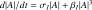
سعة النمط وصفًا جيدًا، كما تُشتق من نظريتي الاضطراب، وذلك بمعدل نمو خطي موجب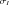
ومعامل غير خطي سالب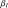
. ويظل هذا الوصف صالحًا ضمن النطاق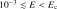
. يعتمد المعامل اعتمادًا ضعيفًا على، مما يعني أن السعة المشبعة تتبع تقريبًا القياس 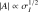
. ويتكوّن شكل النمط عند التوازن من النمط الأساسي ومن التوافقيين الأعلى  و
و ، وتتدرج سعاتها تقريبًا مثل
، وتتدرج سعاتها تقريبًا مثل 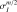
. تنشأ آلية التشبع من إجهادات Reynolds التي تؤثر عكسيًا في الدوران التفاضلي مع خط العرض وتجعله أكثر نعومة. وعند ، وهي قيمة متسقة مع القيم الشبيهة بالشمس المستنتجة من اللزوجة المضطربة فائقة التحبب، تصل السرعة المشبعة إلى
، وهي قيمة متسقة مع القيم الشبيهة بالشمس المستنتجة من اللزوجة المضطربة فائقة التحبب، تصل السرعة المشبعة إلى 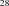
m/s، وهي قريبة من القيمة المرصودة على الشمس.الخلاصة.
في بعدين، تخضع بداية نمط القصور الذاتي الشمسي وتشبعُه لتشعّب Hopf فوق حرج مرتبط بعدم استقرار قص، وتصفه نظرية غير خطية ضعيفة وصفًا جيدًا. ومع ذلك ينبغي عدم المبالغة في تفسير هذه النتائج، لأن عدم الاستقرار في النماذج الثلاثية الأبعاد باروكليني بطبيعته، ما يشير إلى فيزياء أساسية مختلفة.
الكلمات المفتاحية:
الشمس: علم الاهتزازات الشمسية؛ الشمس: التذبذبات؛ الطرق: عددية؛ حالات عدم الاستقرار1 مقدمة
أنماط القصور الذاتي هي أنماط عالمية منخفضة التردد من التذبذبات مدفوعة بقوة Coriolis في السوائل الدوارة. منذ أول اكتشاف لأنماط Rossby الشمسية Löptien et al. (2018)، عدة فئات من الأنماط، بما في ذلك أوضاع خطوط العرض العالية (Gizon et al., 2021) وطريقة الحمل الحراري الدوّار (HFR، Hanson et al., 2022; Hanasoge, 2026)، تم الإبلاغ عنها. تشمل الملاحظات الترددات والسعات وعروض الخطوط والوظائف الذاتية للسرعة السطحية (Gizon et al., 2024, والمراجع الواردة فيها). وقد تم تطوير حلول القيمة الذاتية (Fournier et al., 2022; Bekki et al., 2022b; Bhattacharya and Hanasoge, 2023; Mukhopadhyay et al., 2025) للتعرف على الأنماط، ودراسة ثباتها الخطي. ومع ذلك، فإن حسابات النمط العادي غير كافية لتفسير سعات الأنماط.
تمت دراسة سعة الأنماط المستقرة خطيًا، مثل أنماط Rossby، باستخدام طرق شبه تحليلية وعمليات محاكاة غير خطية. Philidet and Gizon (2023), Bekki et al. (2022a)، و Blume et al. (2024) يجادل بأن هذه الأنماط يتم تحفيزها وإخمادها عشوائيًا بواسطة الحمل الحراري المضطرب بالقرب من السطح، مما يؤدي إلى سعات من رتبة 1 m/s، بما يتوافق مع الملاحظات.
 ، بينما تتوافق المنحنيات الحمراء المتقطعة مع الحلول غير المستقرة. تشير الأسهم السوداء إلى التطورات المحتملة المختلفة للنظام، والتي يمكن حسابها عدديًا. سننظر في طريقتين للاضطراب للحصول على سعة التوازن في حالة التشعب فوق الحرج، حيث تكون المعلمة الصغيرة إما المسافة إلى رقم Ekman الحرج
، بينما تتوافق المنحنيات الحمراء المتقطعة مع الحلول غير المستقرة. تشير الأسهم السوداء إلى التطورات المحتملة المختلفة للنظام، والتي يمكن حسابها عدديًا. سننظر في طريقتين للاضطراب للحصول على سعة التوازن في حالة التشعب فوق الحرج، حيث تكون المعلمة الصغيرة إما المسافة إلى رقم Ekman الحرج  أو السعة نفسها.
أو السعة نفسها. تملك أنماط القصور الذاتي عند خطوط العرض العالية أكبر السعات المرصودة على الشمس. على وجه الخصوص، يصل نمط خطوط العرض العالية  إلى اتساع في النطاق
إلى اتساع في النطاق  –
– m/s على مدار الدورة الشمسية (Liang and Gizon, 2025; Lekshmi et al., 2026)، بمتوسط قيمة
m/s على مدار الدورة الشمسية (Liang and Gizon, 2025; Lekshmi et al., 2026)، بمتوسط قيمة  m/s. حسابات القيم الذاتية في بعدين أفقيين (Fournier et al., 2022) وفي نماذج ثلاثية الأبعاد (Bekki et al., 2022b) تشير إلى أن هذه الأنماط غير مستقرة خطيًا.
المحاكاة العددية للحمل الشمسي (Bekki et al., 2024; Souza-Gomes et al., 2025) أظهر أن نمط خطوط العرض العالية
m/s. حسابات القيم الذاتية في بعدين أفقيين (Fournier et al., 2022) وفي نماذج ثلاثية الأبعاد (Bekki et al., 2022b) تشير إلى أن هذه الأنماط غير مستقرة خطيًا.
المحاكاة العددية للحمل الشمسي (Bekki et al., 2024; Souza-Gomes et al., 2025) أظهر أن نمط خطوط العرض العالية
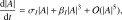
غير مستقر من الناحية الباروكية ويتفاعل بشكل خلفي مع الدوران التفاضلي عبر النقل باتجاه خط الاستواء للإنتروبيا وتوازن الرياح الحرارية. في هذا السيناريو، يلعب نمط خطوط العرض العالية هذا دورًا رئيسيًا في التحكم في الحد الأقصى المسموح به للدوران التفاضلي. تلتقط عمليات المحاكاة غير الخطية هذه الديناميكيات الكاملة، بما في ذلك تفاعلات النمط والنمط والآليات الحركية ونقل الحرارة، ولكنها مكلفة من الناحية الحسابية وليس من السهل تفسيرها. علاوة على ذلك، من الصعب الحصول على دوران تفاضلي يشبه دوران الشمس انطلاقًا من المبادئ الأولى في عمليات المحاكاة هذه - وهو عنصر أساسي لنمذجة أنماط القصور الذاتي عند خطوط العرض العالية، والتي تعتبر حساسة جدًا لقيم القص الطولي.في هذه الدراسة، نحسب معدل النمو الخطي وسعة التشبع غير الخطي للنمط الحلقي غير المستقر 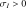 في خطوط العرض العالية على كرة دوارة تفاضلية، مما يوسع التحليل الخطي لـ Fournier et al. (2022). في هذا النظام، يتم إعادة توزيع الزخم الزاوي فقط من خلال ضغوط Reynolds المرتبطة بأنماط القصور الذاتي، مما يمثل تبسيطًا كبيرًا للديناميكيات الكاملة في ثلاثة أبعاد. ومع ذلك، يوفر هذا النموذج رؤية قيمة للتفاعلات الهيدروديناميكية بين النمط الأساسي (النمط الخطي الأكثر عدم استقرارًا) والتدفق القاعدي. كما يسمح لنا بحساب حالة التوازن، والتي تتضمن التوافقيات الأعلى11
1
وفقًا للاتفاقية، يشير التوافقي
في خطوط العرض العالية على كرة دوارة تفاضلية، مما يوسع التحليل الخطي لـ Fournier et al. (2022). في هذا النظام، يتم إعادة توزيع الزخم الزاوي فقط من خلال ضغوط Reynolds المرتبطة بأنماط القصور الذاتي، مما يمثل تبسيطًا كبيرًا للديناميكيات الكاملة في ثلاثة أبعاد. ومع ذلك، يوفر هذا النموذج رؤية قيمة للتفاعلات الهيدروديناميكية بين النمط الأساسي (النمط الخطي الأكثر عدم استقرارًا) والتدفق القاعدي. كما يسمح لنا بحساب حالة التوازن، والتي تتضمن التوافقيات الأعلى11
1
وفقًا للاتفاقية، يشير التوافقي  مضروبًا في النمط الأساسي، وفقًا، على سبيل المثال، Schmid and Henningson (2012). مع . في الأدب (انظر، على سبيل المثال، Bagheri, 2013)، تشير هذه الحالات غير الخطية (التوافقيات الأساسية والعليا) أيضًا إلى أنماط Koopman غير المقاربة.
مضروبًا في النمط الأساسي، وفقًا، على سبيل المثال، Schmid and Henningson (2012). مع . في الأدب (انظر، على سبيل المثال، Bagheri, 2013)، تشير هذه الحالات غير الخطية (التوافقيات الأساسية والعليا) أيضًا إلى أنماط Koopman غير المقاربة.
علاوة على ذلك، فإن المشكلة غير الخطية ثنائية الأبعاد أكثر قابلية للتطبيق النظرية غير الخطية الضعيفة (WNL)، والتي تقدم بديلاً واعدًا للحلول العددية غير الخطية بالكامل في ظل ظروف معينة. يعكس مصطلح ”ضعيف” حقيقة أن التحليل لا يأخذ في الاعتبار المدى الكامل للتأثيرات غير الخطية ولكنه بدلاً من ذلك يتضمن فقط مجموعة صغيرة من التفاعلات غير الخطية الضرورية للوصول إلى التشبع. النتيجة المركزية لنظرية WNL هي معادلة السعة التي تعتمد على الوقت، والتي تم تقديمها في الأصل في ديناميكا الموائع بواسطة Landau (1944),
 |
 |
حيث يمثل
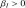
، معامل Landau الأول، معدل النمو الخطي للنمط ( للنمط غير المستقر) ويُعرَف
للنمط غير المستقر) ويُعرَف  بمعامل Landau الثاني. إذا كان
بمعامل Landau الثاني. إذا كان  ، فإن النظام يسمى فوق الحرج: أي اضطراب يتجاوز الحالة الحرجة سيؤدي إلى وصول النظام إلى نفس الحالة النهائية كما هو موضح في اللوحة اليسرى من الشكل 1. عندما لا يكون هناك نمط غير مستقر (أي أن رقم Ekman أكبر من القيمة الحرجة
، فإن النظام يسمى فوق الحرج: أي اضطراب يتجاوز الحالة الحرجة سيؤدي إلى وصول النظام إلى نفس الحالة النهائية كما هو موضح في اللوحة اليسرى من الشكل 1. عندما لا يكون هناك نمط غير مستقر (أي أن رقم Ekman أكبر من القيمة الحرجة  )، فإن أي اضطراب سوف يتحلل في فترة زمنية محددة وسيعود النظام إلى حالته الأولية (التوازن التافه). بالنسبة لـ
)، فإن أي اضطراب سوف يتحلل في فترة زمنية محددة وسيعود النظام إلى حالته الأولية (التوازن التافه). بالنسبة لـ  ، فإن أي اضطراب سيؤدي إلى وصول النظام إلى حالة توازن جديدة (غير تافهة). إذا كان
، فإن أي اضطراب سيؤدي إلى وصول النظام إلى حالة توازن جديدة (غير تافهة). إذا كان  ، فإن التشعب يكون دون الحرج وتعتمد الحالة النهائية على قوة الاضطراب (اللوحة اليمنى من الشكل 1). في هذه الحالة، هناك حاجة إلى مصطلحات ذات ترتيب أعلى في معادلة السعة لتحديد سعة التوازن.
، فإن التشعب يكون دون الحرج وتعتمد الحالة النهائية على قوة الاضطراب (اللوحة اليمنى من الشكل 1). في هذه الحالة، هناك حاجة إلى مصطلحات ذات ترتيب أعلى في معادلة السعة لتحديد سعة التوازن.
معادلة السعة، المعادلة (1) تم اشتقاقها رسميًا لأول مرة بواسطة Stuart (1960) لمعادلة Orr–Sommerfeld في حالة تدفق Poiseuille المستوي، باستخدام التوسع متعدد المقاييس. المشاكل ذات الصلة بتدفقات القص المختلفة في المستوى
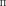
حيث تمت دراستها، على سبيل المثال، Burns and Maslowe (1983) و Churilov and Shukhman (1986). ومن اللافت للنظر أن مشكلتنا تتكون أيضًا من حل معادلة Orr–Sommerfeld المعدلة، حيث يلعب الدوران التفاضلي العرضي دور الجريان القصّي (Gizon et al., 2020; Fournier et al., 2022). تحفز هذه الاعتبارات على تطبيق النظرية الضعيفة اللاخطية في النظام فوق الحرج.فيما يلي، نوضح عدديًا أن نمط خطوط العرض العالية
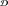
هو النمط غير المستقر، وأنه يخضع لتشعب فوق حرج، وأن النظرية غير الخطية الضعيفة تلتقط تطوره غير الخطي بالقرب من البداية (بالنسبة لقيم رقم Ekman ليست بعيدة جدًا عن القيم الشمسية).2 إعداد المشكلة
2.1 المعادلة الحاكمة
نحن نعتبر الانتشار (غير الخطي) للأنماط الحلقية البحتة على كرة دوارة تفاضلية ثنائية الأبعاد نصف قطرها
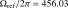
. وعلى الرغم من أن هذا النموذج مبسّط للغاية، إلا أن هذه المشكلة تحتوي على الدوران التفاضلي واللزوجة، وهما مكونان أساسيان لدراسة المجموعات المختلفة لأنماط القصور الذاتي (Fournier et al., 2022).في إطار يدور عند
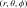
، تكون معادلة الزخم للتدفق اللزج غير القابل للضغط هي
هي
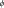 |
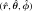 |
حيث
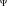
هو الجهد الذي تشتق منه جميع القوى المحافظة (مثل الضغط والجاذبية)، و هو موتر الإجهاد اللزج. لقد استخدمنا
هو موتر الإجهاد اللزج. لقد استخدمنا  nHz في تحليلنا الحالي. نحن نعمل في الإحداثيات الكروية
nHz في تحليلنا الحالي. نحن نعمل في الإحداثيات الكروية 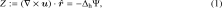
، حيث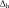
هو خط العرض و هو خط الطول، مع متجهات الوحدة
هو خط الطول، مع متجهات الوحدة ![\begin{equation}
\frac{\partial Z}{\partial t} - \frac{2\Omega_\mathrm{ref}}{r^2} \frac{\partial \Psi}{\partial \phi} - \left[\nabla\times \left(\nabla \cdot \bm{\mathcal{D}}\right)\right]\cdot \hat{\bm{r}} = J[Z, \Psi] ,
\label{eqn:streamNL}
\end{equation}](equations/eq_0062.svg) . بافتراض وجود حركات حلقية بحتة، يمكن كتابة التدفق بدلالة دالة التدفق
. بافتراض وجود حركات حلقية بحتة، يمكن كتابة التدفق بدلالة دالة التدفق 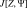
بحيث![\begin{equation}
J[Z, \Psi] = \frac{1}{r^2\sin\theta} \left(\frac{\partial \Psi}{\partial \theta} \frac{\partial Z}{\partial \phi} - \frac{\partial \Psi}{\partial \phi} \frac{\partial Z}{\partial \theta}\right).
\label{eqn:sph_jacobian}
\end{equation}](equations/eq_0064.svg) |
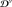 |
أيضًا، يتم تعريف الدوامة الشعاعية
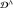
على أنها |
حيث تشير  إلى مؤثر لابلاس الأفقي
إلى مؤثر لابلاس الأفقي
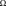 |
 |
بأخذ المركبة الشعاعية لدوران للمعادلة (2) نحصل عليها
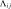 |
 |
حيث  هو المصطلح غير الخطي (اليعقوبي).
هو المصطلح غير الخطي (اليعقوبي).
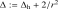 |
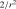 |
يبقى مناقشة موتر الإجهاد اللزج، الذي يحتوي على الأجزاء المبددة (
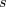
) والمحافظة ( ) (انظر، على سبيل المثال، Rüdiger, 1989):
) (انظر، على سبيل المثال، Rüdiger, 1989):
![\begin{equation}
\frac{\partial Z}{\partial t} - \frac{2\Omega_\mathrm{ref}}{r^2}\frac{\partial \Psi}{\partial \phi} - \nu \Delta Z - \frac{\nu}{r^2\sin\theta} \frac{\partial}{\partial\theta} \left(\frac{1}{\sin\theta} \frac{\partial \chi}{\partial\theta}\right) = J[Z, \Psi].
\label{eq:vorticity_nl}
\end{equation}](equations/eq_0079.svg) |
 |
حيث هو موتر الانفعال و
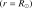
هي اللزوجة الدوامة أو المضطربة. يتم تعريف السرعة الزاوية، ، من حيث المكون المتماثل المحوري للسرعة السمتية،
، من حيث المكون المتماثل المحوري للسرعة السمتية،
 |
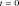 |
تمثل عناصر الموتر بدون وحدة
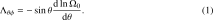
نقل الزخم الزاوي غير المنتشر (تأثير ) الذي يحافظ على دوران تفاضلي شبيه بالشمس. انحراف موتر الإجهاد اللزج هو
) الذي يحافظ على دوران تفاضلي شبيه بالشمس. انحراف موتر الإجهاد اللزج هو
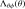 |
 |
حيث  . مصطلح
. مصطلح  ينبع من أخذ تباعد موتر الانفعال
ينبع من أخذ تباعد موتر الانفعال
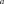
في الهندسة الكروية (انظر، على سبيل المثال، Lindborg and Nordmark, 2022, الملحق ب الخاص بهم); كان مفقودا في دراستنا السابقة (Fournier et al., 2022)ولكنها ضرورية لضمان الحفاظ على الزخم الزاوي. المعادلة (6) تؤدي إلى معادلة الدوامية الشعاعية :
:
 |
2.2 الدوران التفاضلي الخلفي وتأثير
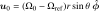
المعادلة (11) يجب أن تُستكمل بشرط أولي. نقوم بتهيئة المحاكاة الخاصة بنا باستخدام ملف تعريف الدوران التفاضلي الشبيه بالشمس
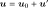
ونضيف كمية صغيرة من الضوضاء العشوائية لإثارة النظام. نحن نعتبر ملف تعريف الدوران التفاضلي على سطح الشمس مستنتجًا من بيانات HMI لمدة ست سنوات باستخدام معاملات 36 الخاصة بعلم الاهتزازات الشمسية
مستنتجًا من بيانات HMI لمدة ست سنوات باستخدام معاملات 36 الخاصة بعلم الاهتزازات الشمسية  (Larson and Schou, 2018, انظر الشكل 2a).
يتم اختيار تأثير
(Larson and Schou, 2018, انظر الشكل 2a).
يتم اختيار تأثير 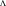
بحيث يتم استيفاء المعادلة (11) في الوقت مما يعني (انظر الملحق A للاشتقاق)
مما يعني (انظر الملحق A للاشتقاق)
 |
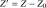 |
إن تأثير
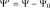
المقابل،![\begin{equation}
\left(\frac{D}{D t} - \nu \Delta\right)Z' + \frac{1}{r^2\sin\theta}\frac{\partial \tilde{Z}_0}{\partial \theta} \frac{\partial \Psi'}{\partial \phi} = J[Z', \Psi'] ,
\label{eq:vorticity_nl2}
\end{equation}](equations/eq_0105.svg) ، المحسوب باستخدام ملف تعريف شبيه بالشمس
، المحسوب باستخدام ملف تعريف شبيه بالشمس 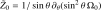
، معروض في الشكل 2b.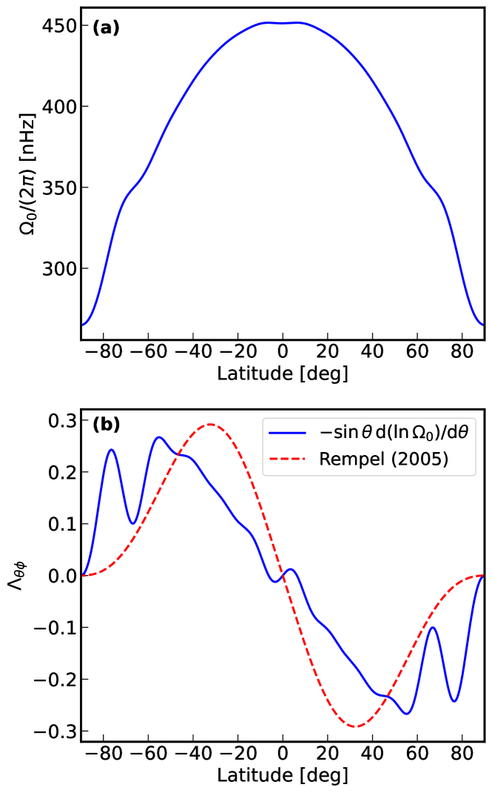
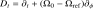
المرتبط به. ( أ ) ملف تعريف الدوران التفاضلي الشمسي السطحي المستنتج من علم الاهتزازات الشمسية من ست سنوات من بيانات HMI (مع معاملات 36
المستنتج من علم الاهتزازات الشمسية من ست سنوات من بيانات HMI (مع معاملات 36 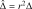
، Larson and Schou, 2018). ( ب ) الوظيفة المقابلة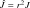
المحسوبة باستخدام المعادل (12). للمقارنة، قمنا برسم تأثير الموصوف بواسطة Rempel (2005)، وهو في نصف الكرة الشمالي.
في نصف الكرة الشمالي.2.3 معادلة الموجات غير الخطية
نحن الآن نعتبر الانحراف عن التدفق الأولي (الأساسي)  عن طريق كتابة التدفق
عن طريق كتابة التدفق  . يتم إعطاء المعادلة من الرتبة الصفرية كـ
. يتم إعطاء المعادلة من الرتبة الصفرية كـ
![\begin{equation}
\frac{\partial \hat{Z}}{\partial \hat{t}} + \delta \frac{\partial \hat{Z}}{\partial \phi} + \frac{1}{\sin\theta} \frac{\partial \hat{Z}_0}{\partial \theta} \frac{\partial\hat{\Psi}}{\partial \phi} - E \hat{\Delta} \hat{Z}
= \hat{J}[\hat{Z}, \hat{\Psi}].
\label{eqn:forward_norm}
\end{equation}](equations/eq_0115.svg) |
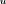 |
حيث
 |
 |
هي الدوامة الشعاعية الأولية. المعادلة (13) راضية عن اختيارنا لتأثير
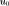
من القسم السابق.في التحليل الحالي، لم نأخذ في الاعتبار تعديل
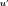
بسبب التغير الدوران؛ أي أننا نفترض أن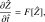
ثابت طوال عملية المحاكاة. غالبًا ما يستخدم هذا الافتراض في عمليات المحاكاة العددية لمنطقة الحمل الحراري الشمسية (انظر، على سبيل المثال، Rempel, 2005; Bekki et al., 2022a) ولكن يمكن حذفها إذا لزم الأمر. في هذه الحالة، يمكن كتابة معادلة الدوامية (11) بدلالة الدوامة المضطربة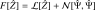
ودالة التدفق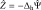
 |
حيث يشير ![\begin{align}
\mathcal{L}[\hat{Z}] &:= -\delta \frac{\partial \hat{Z}}{\partial \phi} - \frac{1}{\sin\theta} \frac{\partial \hat{Z_0}}{\partial \theta} \frac{\partial\hat{\Psi}}{\partial \phi} + E \hat{\Delta} \hat{Z}, \label{eq:linear_part_pde} \\
\mathcal{N}[\hat{\Psi}_1, \hat{\Psi}_2] &:= \hat{J}[-\Delta_{\rm h} \hat{\Psi}_1, \hat{\Psi}_2] \label{eq:non-linear_part_pde}.
\end{align}](equations/eq_0126.svg) و إلى مشتق المادة في الإطار المرجعي الدوار.
و إلى مشتق المادة في الإطار المرجعي الدوار.
3 المحاكاة العددية المباشرة (DNS)
3.1 الصيغة عديمة الأبعاد لمعادلة الحركة
نحن نقدم الكميات بلا أبعاد
 |
والمشغلين و. ترتبط الدوامة الشعاعية الطبيعية ودالة التدفق من خلال . تحديد الدوران التفاضلي المقاس ورقم Ekman كـ
يمكن كتابة المعادلة (15) في شكل بلا أبعاد كما يلي:
يمكن الحصول على التدفق الإجمالي من وفقًا لـ
حيث يمثل المصطلح الأول على الجانب الأيمن تدفق الخلفية  ، ويتوافق المصطلح الثاني مع الاضطراب حول هذا التدفق القاعدي.
، ويتوافق المصطلح الثاني مع الاضطراب حول هذا التدفق القاعدي.
3.2 مخطط التكامل الزمني
يمكن كتابة التطور الزمني لمجال الدوامة الشعاعية الموصوف بواسطة المعادلة (18) كـ
 |
حيث يتم إعطاء مع  والمشغل الخطي
والمشغل الخطي  والشكل الثنائي بواسطة
والشكل الثنائي بواسطة
 |
||||
 |
 |
 |
بالنسبة لتقدير الوقت، نختار مخططًا صريحًا لأن شرط Courant-Friedrichs-Lewy (CFL) ليس مقيدًا للغاية. وعلى وجه الخصوص، نستخدم مخطط آدامز-باشفورث للأمر الثالث (انظر على سبيل المثال، Durran, 1991) مثل هذا
 |
حيث  . يتم اختيار الخطوة الزمنية
. يتم اختيار الخطوة الزمنية  بحيث يتم احترام شرط CFL وعادة ما يصل إلى بضع ساعات. يتم وصف من خلال الحالة الابتدائية. بالنسبة للتكرارات الأولى، نستخدم مخطط الرتبة الأول للحصول على
بحيث يتم احترام شرط CFL وعادة ما يصل إلى بضع ساعات. يتم وصف من خلال الحالة الابتدائية. بالنسبة للتكرارات الأولى، نستخدم مخطط الرتبة الأول للحصول على  والنظام الثاني للحصول على
والنظام الثاني للحصول على  .
.
3.3 التفريد المكاني
في خطوة زمنية معينة، تُحلَّل  إلى توافقيات كروية تصل إلى أقصى درجة
إلى توافقيات كروية تصل إلى أقصى درجة  (
( في هذه الدراسة)
في هذه الدراسة)
 |
نحن بحاجة إلى تقييم المعاملات التوافقية الكروية لـ .
يمكن حساب الجزء الخطي المحدد بواسطة المعادلة (21) مباشرة في الفضاء التوافقي الكروي من ومعاملات دالة التدفق المرتبطة بها  بطريقة مماثلة كما في Fournier et al. (2022). بالنسبة للجزء غير الخطي، قمنا بإعادة بناء مشتقات
بطريقة مماثلة كما في Fournier et al. (2022). بالنسبة للجزء غير الخطي، قمنا بإعادة بناء مشتقات  و لـ و
و لـ و  من خواص التوافقيات الكروية باستخدام مكتبة shtns (Schaeffer, 2013). يمكننا بعد ذلك بناء الحد اليعقوبي وإسقاطه على التوافقيات الكروية.
من خواص التوافقيات الكروية باستخدام مكتبة shtns (Schaeffer, 2013). يمكننا بعد ذلك بناء الحد اليعقوبي وإسقاطه على التوافقيات الكروية.
4 النتائج العددية
تتم تهيئة عمليات المحاكاة باستخدام الدوران التفاضلي الشمسي السطحي المطابق للملف التعريفي من Larson and Schou (2018) تم الحصول عليها باستخدام معاملات 36 من بيانات HMI لمدة ست سنوات. وفوق الدوران، نضيف ضوضاء بيضاء (في الفضاء التوافقي الكروي) لزعزعة استقرار النظام. ثم نقوم بتشغيل عمليات المحاكاة حتى تصل إلى حالة التوازن.
![\begin{equation}
\left[ (\bm{u} \cdot \nabla) \bm{u} \right]_m = \int_0^{2\pi} \sum_{m_1,m_2} \left[ \left( \bm{u}_{m_1} \textrm{e}^{\ii m_1 \phi} \right) \cdot \nabla \right] \left(\bm{u}_{m_2} \textrm{e}^{\ii m_2 \phi} \right) \textrm{e}^{-\ii m \phi} \mathrm{d}\phi.
\end{equation}](equations/eq_0179.svg) من DNS لرقم Ekman، . اللوحة العلوية عبارة عن تكبير بين الخطين العموديين الأزرقين على اللوحة السفلية لإظهار أن التذبذبات لا تتكون من توافقي واحد بسبب عدم الخطية في النظام.
من DNS لرقم Ekman، . اللوحة العلوية عبارة عن تكبير بين الخطين العموديين الأزرقين على اللوحة السفلية لإظهار أن التذبذبات لا تتكون من توافقي واحد بسبب عدم الخطية في النظام.4.1 التطور الزمني ونظام التشبع
يوضح الشكل 3 الدوامة الشعاعية كدالة للوقت في موقع محدد على الكرة، ، لرقم Ekman من . في هذه الحالة، هناك نمط واحد فقط ( ) غير مستقر خطيًا، ونلاحظ ثلاث مراحل رئيسية في الوقت المناسب:
) غير مستقر خطيًا، ونلاحظ ثلاث مراحل رئيسية في الوقت المناسب:
-
•
المرحلة العابرة الأولية: مرحلة غير خطية للغاية تعتمد على الحالة الابتدائية. يتم تنظيم الهياكل الصغيرة الأولية لإثارة حالة من عدم الاستقرار.
-
•
مرحلة التضخيم: يزداد النمط غير المستقر في السعة حتى يتفاعل بشكل كافٍ مع تدفق الخلفية لتحقيق استقرار النظام.
-
•
نظام التشبع: النظام مستقر وقد وصل إلى حالة التوازن. تتأرجح الإشارة عند تردد النمط الأكثر هيمنة (نمط بتردد nHz) ولكن الاعتماد على الوقت ليس توافقيًا تمامًا بسبب عدم الخطية.
يتم عرض لقطات في مرحلة التوازن لثلاث عمليات محاكاة بقيم رقم Ekman مختلفة في الشكل 4. إنها تمثل الدوامة الشعاعية مطروحًا منها متوسط الدوامة الطولية لتحسين الرؤية. بالنسبة لأعداد Ekman الكبيرة ()، يكون نمط  فقط غير مستقر ويحتوي الحل في الغالب على مكون في نهاية المحاكاة.
مع انخفاض اللزوجة، أصبحت عدة أوضاع غير مستقرة، ولا يزال النمط السائد في نهاية المحاكاة هو لـ
فقط غير مستقر ويحتوي الحل في الغالب على مكون في نهاية المحاكاة.
مع انخفاض اللزوجة، أصبحت عدة أوضاع غير مستقرة، ولا يزال النمط السائد في نهاية المحاكاة هو لـ  ولكنه يصبح
ولكنه يصبح  لقيم رقم Ekman الأصغر. بالنسبة للزوجة الصغيرة جدًا (
لقيم رقم Ekman الأصغر. بالنسبة للزوجة الصغيرة جدًا ( )، تصبح عين القطة المقابلة لعدم الاستقرار Kelvin-Helmholtz مرئية، وتختلف الوظيفة الذاتية بشكل كبير عن الوظيفة الذاتية الخطية (انظر الشكل C.7 في Fournier et al., 2022).
)، تصبح عين القطة المقابلة لعدم الاستقرار Kelvin-Helmholtz مرئية، وتختلف الوظيفة الذاتية بشكل كبير عن الوظيفة الذاتية الخطية (انظر الشكل C.7 في Fournier et al., 2022).
4.2 تشعّب Hopf فوق الحرج
 حيث لا توجد أوضاع غير مستقرة. تتوافق المنطقة البيضاء مع المنطقة التي يكون فيها نمط واحد فقط غير مستقر، وبالتالي يمكن تطبيق نظرية WNL، على عكس المنطقة الرمادية. تتوافق النقاط المسماة 1 و2 و3، على التوالي، مع قيم رقم Ekman من المخططات الفرعية اليسرى والوسطى واليمنى في الشكل 4.
حيث لا توجد أوضاع غير مستقرة. تتوافق المنطقة البيضاء مع المنطقة التي يكون فيها نمط واحد فقط غير مستقر، وبالتالي يمكن تطبيق نظرية WNL، على عكس المنطقة الرمادية. تتوافق النقاط المسماة 1 و2 و3، على التوالي، مع قيم رقم Ekman من المخططات الفرعية اليسرى والوسطى واليمنى في الشكل 4.يوضح الشكل 3 تطور الدوامة الشعاعية لرقم Ekman التمثيلي،  . أجرينا عمليات محاكاة على قيم رقم Ekman مختلفة ولاحظنا أن جميعها تتقارب إلى حالة مستقرة نهائية، بغض النظر عن قوة الاضطراب الأولي، وهي سمة من سمات بنية التشعب فوق الحرج. الشكل 5 يوضح السرعة النهائية لجذر متوسط التربيع (RMS)
. أجرينا عمليات محاكاة على قيم رقم Ekman مختلفة ولاحظنا أن جميعها تتقارب إلى حالة مستقرة نهائية، بغض النظر عن قوة الاضطراب الأولي، وهي سمة من سمات بنية التشعب فوق الحرج. الشكل 5 يوضح السرعة النهائية لجذر متوسط التربيع (RMS)
 |
كدالة للرقم Ekman.
بالنسبة إلى ، تكون جميع الأنماط مستقرة خطيًا، ويعود النظام إلى حالته الأولية (التوازن التافه). بالنسبة إلى  ، يكون هناك نمط واحد على الأقل غير مستقر ويتطور عدم الاستقرار. تزداد سعة تشبع النمط مع المسافة من رقم Ekman الحرج. في القسم 5، نقدم نظرية WNL لشرح السعات النهائية. تم تطوير هذه النظرية عندما يكون هناك نمط واحد فقط غير مستقر وهو صالح لـ
، يكون هناك نمط واحد على الأقل غير مستقر ويتطور عدم الاستقرار. تزداد سعة تشبع النمط مع المسافة من رقم Ekman الحرج. في القسم 5، نقدم نظرية WNL لشرح السعات النهائية. تم تطوير هذه النظرية عندما يكون هناك نمط واحد فقط غير مستقر وهو صالح لـ  في هذا الإعداد. ومع ذلك، يمكن توسيع هذا الإطار النظري، إذا كانت الأنماط المتعددة غير مستقرة (انظر، على سبيل المثال، Dey and Suslov, 2019; Cudby and Lefauve, 2021). إذا كان هناك عدد كبير جدًا من الأنماط غير مستقرة، يتم اللجوء إلى طرق رقمية أخرى، مثل تحليل النمط الديناميكي (Schmid, 2022)، يفضل.
في هذا الإعداد. ومع ذلك، يمكن توسيع هذا الإطار النظري، إذا كانت الأنماط المتعددة غير مستقرة (انظر، على سبيل المثال، Dey and Suslov, 2019; Cudby and Lefauve, 2021). إذا كان هناك عدد كبير جدًا من الأنماط غير مستقرة، يتم اللجوء إلى طرق رقمية أخرى، مثل تحليل النمط الديناميكي (Schmid, 2022)، يفضل.
 تم الحصول عليه من عمليات المحاكاة العددية لأرقام موجية سمتية مختلفة
تم الحصول عليه من عمليات المحاكاة العددية لأرقام موجية سمتية مختلفة  بقيم رقم Ekman؛ (أ) ، (ب)
بقيم رقم Ekman؛ (أ) ، (ب)  و (ج)
و (ج)  . المنحنيات المتصلة مأخوذة من DNS وتتوافق الخطوط العمودية المتقطعة مع الترددات الخطية (باستخدام ملف تعريف الدوران التفاضلي الأولي) للنمط الأقل تخميدًا لأرقام الموجات السمتية المعنية. يظهر الشكل المكاني للوظائف الذاتية الخطية وغير الخطية للحالات (أ) و (ب) في الشكل 7.
. المنحنيات المتصلة مأخوذة من DNS وتتوافق الخطوط العمودية المتقطعة مع الترددات الخطية (باستخدام ملف تعريف الدوران التفاضلي الأولي) للنمط الأقل تخميدًا لأرقام الموجات السمتية المعنية. يظهر الشكل المكاني للوظائف الذاتية الخطية وغير الخطية للحالات (أ) و (ب) في الشكل 7.
4.3 توليد توافقيات أعلى من النمط غير المستقر الأساسي 
في ديناميات الموائع، يصف التتالي نقل الطاقة عبر مستويات مختلفة (انظر، على سبيل المثال، Böning et al., 2023). يتم التحكم في هذا النقل من خلال المصطلح اللاخطي في معادلة Navier-Stokes،  ، والذي يجمع بين أنماط فورييه المختلفة ويعيد توزيع الطاقة فيما بينها. بتحليل التدفق إلى أوضاع السمت
، والذي يجمع بين أنماط فورييه المختلفة ويعيد توزيع الطاقة فيما بينها. بتحليل التدفق إلى أوضاع السمت  ، يمكن كتابة المصطلح غير الخطي كـ
، يمكن كتابة المصطلح غير الخطي كـ
 |
 |
نحن نفترض أن التدفق يهيمن عليه نمط واحد غير مستقر (أساسي) مع رقم موجة  (في الدراسة الحالية ). نظرًا للبنية التربيعية للمصطلح التفضيلي، تتفاعل الأنماط من خلال الحالة الثلاثية . التفاعل الذاتي للنمط الأساسي (
(في الدراسة الحالية ). نظرًا للبنية التربيعية للمصطلح التفضيلي، تتفاعل الأنماط من خلال الحالة الثلاثية . التفاعل الذاتي للنمط الأساسي ( ) يولد التوافقي الثاني
) يولد التوافقي الثاني  ، في حين أن تفاعله مع المرافق المعقد (، ) يعدل المكون المتماثل المحوري . التفاعلات اللاحقة، مثل ، تولد توافقيات أعلى، مما يؤدي إلى تتالي طاقي (انظر، على سبيل المثال، Schmid and Henningson, 2012, فصلهم 5).
، في حين أن تفاعله مع المرافق المعقد (، ) يعدل المكون المتماثل المحوري . التفاعلات اللاحقة، مثل ، تولد توافقيات أعلى، مما يؤدي إلى تتالي طاقي (انظر، على سبيل المثال، Schmid and Henningson, 2012, فصلهم 5).
يمكن تصور هذه السلسلة من خلال النظر إلى الكثافة الطيفية للقدرة (PSD) لحقل الدوامة الشعاعية المحدد كـ
حيث يشير إلى المتوسط على خط المنطقة ، و هو تحويل فورييه المنفصل ثنائي الأبعاد لـ في نظام التشبع.
يمثل الشكل 6 PSD للدوامة الشعاعية لقيم رقم Ekman الثلاثة المقابلة للشكل 4. عندما يكون نمط واحد فقط غير مستقر ( )، تتركز الطاقة في نمط عند التردد nHz، وهو ما يتوافق تقريبًا مع التردد الذاتي للمشكلة الخطية. ويمكن تقدير هذا التحول في التردد من خلال النظريًات المضطربة الواردة أدناه (انظر الملحق F). هناك بعد ذلك تتالي نحو القيم الأعلى لـ ( عند تردد ، عند ) مع انخفاض في السعة عند كل توافقي.
نستخرج أيضًا الحالة الأساسية () والتوافقيات الثانية والثالثة ( و ) من الحالة المشبعة عن طريق التصفية لـ معين في نطاق تردد ضيق من العرض 30 nHz المتمركز في (انظر الشكل 7a). شكل الحالة الأساسية قريب جدًا من النمط الخطي. ومع ذلك، فإن الترددات والأنماط المكانية للتوافقيات تختلف اختلافًا كبيرًا عن النمطين الخطيين العالميين الأقل إخمادًا و
)، تتركز الطاقة في نمط عند التردد nHz، وهو ما يتوافق تقريبًا مع التردد الذاتي للمشكلة الخطية. ويمكن تقدير هذا التحول في التردد من خلال النظريًات المضطربة الواردة أدناه (انظر الملحق F). هناك بعد ذلك تتالي نحو القيم الأعلى لـ ( عند تردد ، عند ) مع انخفاض في السعة عند كل توافقي.
نستخرج أيضًا الحالة الأساسية () والتوافقيات الثانية والثالثة ( و ) من الحالة المشبعة عن طريق التصفية لـ معين في نطاق تردد ضيق من العرض 30 nHz المتمركز في (انظر الشكل 7a). شكل الحالة الأساسية قريب جدًا من النمط الخطي. ومع ذلك، فإن الترددات والأنماط المكانية للتوافقيات تختلف اختلافًا كبيرًا عن النمطين الخطيين العالميين الأقل إخمادًا و![\begin{align}
\Lm &:= \frac{1}{\sin\theta}\frac{\partial}{\partial \theta}\left(\sin\theta \frac{\partial}{\partial \theta}\right) - \frac{m^2}{\sin^2\theta} \, , \label{eqn:L_m} \\[4pt]
\mathcal{L}_{m, E} &:= -( m\delta + 2 \ii E)\Lm + \frac{m}{\sin\theta}\frac{\partial \hat{Z}_0}{\partial\theta} - \ii E \Lm^2 \,.
\label{eqn:L_A}
\end{align}](equations/eq_0243.svg) . على وجه الخصوص، تظهر التوافقيات بقوة أقوى عند خطوط العرض العالية مقارنة بالوظائف الذاتية الخطية.
. على وجه الخصوص، تظهر التوافقيات بقوة أقوى عند خطوط العرض العالية مقارنة بالوظائف الذاتية الخطية.
بالنسبة إلى ، على الرغم من أن الأنماط المتعددة غير مستقرة، إلا أن النمط لا يزال يحتوي على معظم الطاقة (الشكل 6b). ومع ذلك، فإن شكله يختلف أكثر عن النمط الخطي عما كان عليه في الحالة السابقة (انظر الشكل 7b). في هذه الحالة، التوافقي الثاني والثالث لهما سعة مماثلة.
بالنسبة للزوجة الأصغر ()، يكون النمط أكثر تعقيدًا مع وجود منافسة بين النمطين غير المستقرين خطيًا و، كما يمكن رؤيته في الفيلم المرفق بالشكل 4. يختلف أقوى نمط  في نظام التشبع ( nHz) عن النمط الموجود في بداية المحاكاة ( nHz)، وهو يتوافق مع التردد الذاتي المحسوب باستخدام ملف تعريف الدوران المشبع. في نهاية المحاكاة، هناك عدة أوضاع لها سعة كبيرة، ولم يعد من الممكن تحليل هذه الحالة من خلال النظرية الخطية البسيطة أو من خلال نظرية WNL المقدمة في القسم التالي.
في نظام التشبع ( nHz) عن النمط الموجود في بداية المحاكاة ( nHz)، وهو يتوافق مع التردد الذاتي المحسوب باستخدام ملف تعريف الدوران المشبع. في نهاية المحاكاة، هناك عدة أوضاع لها سعة كبيرة، ولم يعد من الممكن تحليل هذه الحالة من خلال النظرية الخطية البسيطة أو من خلال نظرية WNL المقدمة في القسم التالي.
 و ( ب )
و ( ب )  . أعلى: الوظائف الذاتية من DNS المتوافقة مع النمط الأساسي في (a) nHz و (b) nHz (في الإطار المرجعي Carrington)، التوافقي الثاني في ، والتوافقي الثالث عند . يتم استخراجها عن طريق التصفية حول تردد الطاقة القصوى (انظر كثافات القدرة الطيفية المرتبطة في الشكل 6). الأسفل: الأنماط العالمية الخطية الأقل تخميدًا لـ و3.
. أعلى: الوظائف الذاتية من DNS المتوافقة مع النمط الأساسي في (a) nHz و (b) nHz (في الإطار المرجعي Carrington)، التوافقي الثاني في ، والتوافقي الثالث عند . يتم استخراجها عن طريق التصفية حول تردد الطاقة القصوى (انظر كثافات القدرة الطيفية المرتبطة في الشكل 6). الأسفل: الأنماط العالمية الخطية الأقل تخميدًا لـ و3.5 النظريًات غير الخطية الضعيفة (WNL)
للحصول على بعض التبصر في آلية التشبع للأنماط غير المستقرة والحصول على اتساعها دون اللجوء إلى عمليات المحاكاة غير الخطية، نقترح استخدام طريقتين كلاسيكيتين للاضطراب: (Stuart, 1960) والتوسع في السعة (Watson, 1960) طُرق. تدمج هذه التقنيات المقاربة مصطلحات غير خطية مختارة في إطار هرمي للمعادلات الخطية المدفوعة خارجيًا.
في التوسع متعدد المقاييس، يتم تعريف معلمة الاضطراب الصغيرة على أنها المسافة من الأهمية.
في المقابل، في التوسع في السعة، تعمل السعة المعتمدة على الوقت  للنمط غير المستقر نفسه كمعلمة صغيرة ويجب أن تكون صغيرة بما يكفي بحيث يكون اقتطاع التوسيع مبررًا.
على الرغم من أن كلا النهجين يؤديان إلى نفس معادلة السعة — معادلة ستيوارت-Landau المكعبة، إلا أن الحساب والتفسير الفيزيائي لمعامل Landau الأول يختلفان. في التوسع متعدد المقاييس، يتم الحصول على هذا المعامل باستخدام حالة قابلية الذوبان Fredholm ويمثل التحول في معدل النمو وتكرار النمط الذاتي الحرج بسبب التفكيك الطفيف لرقم Ekman. في المقابل، في التوسع في السعة، فإن معامل Landau الأول هو ببساطة القيمة الذاتية للمشكلة الخطية المحسوبة عند رقم Ekman معين، وبالتالي يمثل معدل النمو وتكرار النمط الأكثر عدم استقرار في النظام.
للنمط غير المستقر نفسه كمعلمة صغيرة ويجب أن تكون صغيرة بما يكفي بحيث يكون اقتطاع التوسيع مبررًا.
على الرغم من أن كلا النهجين يؤديان إلى نفس معادلة السعة — معادلة ستيوارت-Landau المكعبة، إلا أن الحساب والتفسير الفيزيائي لمعامل Landau الأول يختلفان. في التوسع متعدد المقاييس، يتم الحصول على هذا المعامل باستخدام حالة قابلية الذوبان Fredholm ويمثل التحول في معدل النمو وتكرار النمط الذاتي الحرج بسبب التفكيك الطفيف لرقم Ekman. في المقابل، في التوسع في السعة، فإن معامل Landau الأول هو ببساطة القيمة الذاتية للمشكلة الخطية المحسوبة عند رقم Ekman معين، وبالتالي يمثل معدل النمو وتكرار النمط الأكثر عدم استقرار في النظام.
تم استخدام هذه الطرق على نطاق واسع في نظرية الاستقرار الهيدروديناميكي لتقييم تشبع الاضطرابات تجاه حالة السعة المحدودة ولتحديد سلوك التشعب بالقرب من الحالة الحرجة، وتمت مقارنتها على سبيل المثال في (Herbert, 1983; Fujimura, 1989; Zhang, 2016; Pham and Suslov, 2018). نقدم تطبيقات كلا النهجين لمشكلتنا أدناه (الإطار العام وتفاصيل الاشتقاقات مذكورة في الملحق B وC).
5.1 الطريقة الأولى: التوسع متعدد المقاييس
في طريقة التوسيع هذه، يتم استخدام مقياس زمني سريع (نمط التذبذبات) ومقياس زمني بطيء  . يعتمد التسلسل الهرمي للتوسيع على معلمة صغيرة والتي تقيس الابتعاد عن الأهمية الحرجة، بالإضافة إلى مقياس الوقت البطيء
. يعتمد التسلسل الهرمي للتوسيع على معلمة صغيرة والتي تقيس الابتعاد عن الأهمية الحرجة، بالإضافة إلى مقياس الوقت البطيء  . نقوم بتوسيع اضطراب دالة التدفق كما
. نقوم بتوسيع اضطراب دالة التدفق كما
 |
 |
حيث  بحيث يكون حقيقيًا.
مع هذه التهيئة، نتبع نفس الخطوات الإجرائية، كما هو موضح في الملحق B. في الرتبة
بحيث يكون حقيقيًا.
مع هذه التهيئة، نتبع نفس الخطوات الإجرائية، كما هو موضح في الملحق B. في الرتبة  ، باستخدام القياس للحالة العامة (73)، لدينا
، باستخدام القياس للحالة العامة (73)، لدينا
 |
 |
حيث عبارة عن سعة معقدة تعتمد على الوقت، هو التردد (عديم الأبعاد) للنمط الذاتي الحرج الذي يرضي
 |
حيث يتم تعريف العوامل الخطية و على أنها
 |
||||
 |
 |
في الرتبة نواجه تفاعلات غير خطية للاضطرابات التي تعدل التدفق القاعدي وتولد اضطرابات توافقية أعلى. الحد التربيعي غير الخطي  (انظر المعادلة (22)) ينشئ توافقيات في
(انظر المعادلة (22)) ينشئ توافقيات في  و
و و ونسعى لإيجاد حل للصيغة
و ونسعى لإيجاد حل للصيغة
 |
 |
بالرتبة  ، وبسبب التفاعلات غير الخطية و
، وبسبب التفاعلات غير الخطية و ، نحصل على تصحيح للنمط الأساسي والتوافقي الثالث ويأخذ الحل الشكل
، نحصل على تصحيح للنمط الأساسي والتوافقي الثالث ويأخذ الحل الشكل
 |
||||
 |
يتم الحصول على المكونات الأفقية (لـ  ) باستخدام تعبيرات و في المعادلة (20) المؤدية إلى
) باستخدام تعبيرات و في المعادلة (20) المؤدية إلى
حيث ترد الجوانب اليمنى  في الملحق B.
بالنسبة لـ
في الملحق B.
بالنسبة لـ  ، يدخل المقياس الزمني البطيء في التوسع المقارب
عبر
، يدخل المقياس الزمني البطيء في التوسع المقارب
عبر ![\begin{align}
&\tilde{\mathcal{L}} \tilde{\psi}_{31} = \ii \tilde{f}_{31} , \quad \tilde{\psi}_{31} = \left[ \begin{array}{c} \psi_{31} \\ \beta/\Omega_\mathrm{ref} \end{array} \right] , \quad
\tilde{f}_{31} = \left[ \begin{array}{c} f_{31} \\ 0 \end{array} \right] , \\
&\textrm{where} \quad \tilde{\mathcal{L}} = \left[
\begin{array}{cc}
(\sigma+2i\sigma_I)/\Omega_\mathrm{ref} \mathbb{L}_m +\mathcal{L}_{m, E} & \mathbb{L}_m \psi_{11} \\
\psi_{11}^H \mathcal{M} & 0
\end{array}
\right].
\label{eqn:augmented_sys_main}
\end{align}](equations/eq_0310.svg) والعوائد
والعوائد
 |
 |
الجانب الأيسر يتوافق مع مشكلة القيمة الذاتية لدينا، وبالتالي فهو فردي. وفقًا للنظرية البديلة Fredholm، تكون هذه المعادلة قابلة للحل إذا كان حد التأثير على الجانب الأيمن متعامدًا مع الفضاء الفارغ للمشغل المجاور.
أخذ المنتج الداخلي للمعادلة. (36) مع الدالة الذاتية المجاورة  ينتج عنها المعادلة المكعبة Stuart-Landau (انظر، على سبيل المثال، Landau, 1944; Stuart, 1960)
ينتج عنها المعادلة المكعبة Stuart-Landau (انظر، على سبيل المثال، Landau, 1944; Stuart, 1960)
 |
حيث يتم الإشارة إلى  و كمعاملات Landau التي يتم تعريفها على أنها
و كمعاملات Landau التي يتم تعريفها على أنها
 |
بمجرد معرفة معامل Landau الثاني، يمكن الحصول على التصحيح الأساسي عن طريق حل المعادلة (103).
5.2 الطريقة الثانية: التوسع في السعة
في التوسع في السعة، نستخدم الفرضية الذي يمكن كتابة الاضطراب الطبيعي لدالة التدفق كـ
 |
حيث يشير c.c. إلى المرافق المعقد. استبدال هذا التوسع في مكافئ. (20)، نحصل عليها
حيث يتم تعريف العوامل الخطية  و
و في المعادلات. (31) و (32) وتعبيرات الوظائف غير الخطية
في المعادلات. (31) و (32) وتعبيرات الوظائف غير الخطية  و
و مذكورة في المعادلات. (92) و (93) مع
مذكورة في المعادلات. (92) و (93) مع  محسوبة على رقم Ekman
محسوبة على رقم Ekman  (وليس في
(وليس في  كما هو الحال في التوسع متعدد المقاييس).
كما هو الحال في التوسع متعدد المقاييس).
الحفاظ فقط على المصطلحات الخطية في السعة في المعادلة. (40) وباستخدام موجة الفرضية  ، مع مجمع
، مع مجمع  و
و ، نحصل على معادلة الرتبة الرائدة
، نحصل على معادلة الرتبة الرائدة
 |
والذي يتوافق مع مشكلة القيمة الذاتية الخطية ويتيح الوصول إلى النمط الذاتي الأكثر غير المستقر مع القيمة الذاتية المعقدة  والوظيفة الذاتية .
والوظيفة الذاتية .
على غرار المصطلحات الموجودة في  و في التوسع متعدد المقاييس، نقوم بجمع حدود الرتبة الثانية والثالثة في السعة ونكتبها
و في التوسع متعدد المقاييس، نقوم بجمع حدود الرتبة الثانية والثالثة في السعة ونكتبها
شروط الدرجة الثانية (بالنسبة للثالثة) ضرورية لتعويض التفاعلات غير الخطية للأساسي مع نفسه (بالنسبة للتوافقي الثاني). كما هو الحال في التوسع متعدد المقاييس، يتم تعديل التدفق القاعدي ويتم إنشاء التوافقيات الثانية والثالثة بسبب التفاعلات غير الخطية. يتم الحصول على التوزيع المكاني عن طريق الحل
حيث يمكن العثور على والتعبيرات الصريحة للجانب الأيمن في الملحق B. في هذه الحالة، العوامل الخطية على الجانب الأيسر ليست مفردة، وبالتالي قابلة للعكس. من أجل اقتطاع التوسع في السعة، نحتاج إلى افتراض أن التطور الزمني لسعة الاضطراب لا يمكن تحديده من النظرية الخطية وحدها، وبدلاً من ذلك نحتاج إلى إضافة حد آخر في معادلة التطور على النحو التالي (انظر، على سبيل المثال، Crouch and Herbert, 1993; Pham and Suslov, 2018)
 |
هذه هي معادلة Stuart-Landau (انظر، على سبيل المثال، Landau, 1944; Stuart, 1960)، حيث  ، معامل Landau الأول، هو القيمة الذاتية المعقدة الخطية و
، معامل Landau الأول، هو القيمة الذاتية المعقدة الخطية و  هو ثابت Landau الثاني الذي لم يتم تحديده بعد.
استخدام المعادلة (44) بدلاً من موجة الفرضية يؤثر فقط على معادلة
هو ثابت Landau الثاني الذي لم يتم تحديده بعد.
استخدام المعادلة (44) بدلاً من موجة الفرضية يؤثر فقط على معادلة  التي تصبح
التي تصبح
 |
في حالة الرنين ( )، يتم تعريف ثابت Landau الثاني بشكل فريد ويمكن الحصول عليه باستخدام نظرية Fredholm البديلة. ومع ذلك، عند
)، يتم تعريف ثابت Landau الثاني بشكل فريد ويمكن الحصول عليه باستخدام نظرية Fredholm البديلة. ومع ذلك، عند  ، لا يتم تحديد قيمة الثابت Landau بشكل فريد نظرًا لأن النظام غير المتجانس (45) قابل للحل لأي قيمة
، لا يتم تحديد قيمة الثابت Landau بشكل فريد نظرًا لأن النظام غير المتجانس (45) قابل للحل لأي قيمة  ويجب إضافة قيد إضافي. Crouch and Herbert (1993) يقترح افتراض التعامد الموزون بين
ويجب إضافة قيد إضافي. Crouch and Herbert (1993) يقترح افتراض التعامد الموزون بين  و
و ، أي،
، أي،
 |
حيث  عبارة عن مصفوفة محددة موجبة وتشير إلى تبديل Hermitian. Pham and Suslov (2018) أظهر أن هذا الشرط يعادل شرط القابلية للحل عند . هناك عدة خيارات ممكنة لـ
عبارة عن مصفوفة محددة موجبة وتشير إلى تبديل Hermitian. Pham and Suslov (2018) أظهر أن هذا الشرط يعادل شرط القابلية للحل عند . هناك عدة خيارات ممكنة لـ  (Pham and Suslov, 2018, قسمهم 4). هنا، نختار الخيار الأبسط:
(Pham and Suslov, 2018, قسمهم 4). هنا، نختار الخيار الأبسط:  ، مصفوفة الهوية. ثم يتم تحديد ثابت Landau والدالة
، مصفوفة الهوية. ثم يتم تحديد ثابت Landau والدالة  بشكل فريد من خلال حل النظام الموسع
بشكل فريد من خلال حل النظام الموسع
 |
|||
 |
على الرغم من أن أساليب التوسع متعدد المقاييس والسعة تعتمد على أطر اضطراب مختلفة، فإن كلاهما يؤدي إلى نفس الشكل الطبيعي Stuart–Landau لسعة النمط. ينشأ الاختلاف الواضح بين معاملات Landau المقابلة من استخدام معلمات صغيرة وعمليات تطبيع مختلفة. ترتبط مجموعتي المعاملات عن طريق إعادة قياس بسيطة. في حد  ، يجد المرء
، يجد المرء
 |
بحيث يصبح النهجان متكافئين تقريبيا. يتم تأكيد ذلك من خلال الاتفاق الوثيق بين الطريقتين بالقرب من البداية (الشكلان 9 و 10).
5.3 التماثلات
تلعب تماثلات الأنماط دورًا مهمًا في تحديدها في الملاحظات (Gizon et al., 2021). نوضح هنا أن تماثلات التوافقيات الأعلى يتم تحديدها بالكامل من خلال تماثل النمط الأساسي غير المستقر.
الوظائف و المحددة بواسطة المعادلتين (92) و(93) عبارة عن مجموعات ثنائية الخط من و، بما في ذلك مشتقاتها العرضية (التي لها تناظر معاكس) ومقترناتها المعقدة. وبالتالي فهي دائمًا غير متماثلة بين الشمال والجنوب (NS)، مما يعني أن الدوال  و تكون دائمًا غير متماثلة NS.
و تكون دائمًا غير متماثلة NS.
تشتمل الدالتان و على المصطلحات التي هي نتاج دوال لها نفس تناظر NS مما يعني أن التصحيح إلى التوافقي الأساسي والثالث هما NS متماثلان (نفس تناظر النمط الأساسي). في معظم عمليات المحاكاة لدينا، النمط الأكثر عدم استقرار هو عند خطوط العرض العالية وهو NS متماثل وكذلك التوافقي الثالث.
5.4 التنفيذ العددي
يتم تمييز ODEs المختلفة التي تم الحصول عليها في التوسعات متعددة النطاقات والسعة (انظر الأقسام الفرعية 5.1 و5.2) من خلال إسقاط  في كثيرات حدود Legendre المرتبطة
في كثيرات حدود Legendre المرتبطة  . الخطوة الأولى هي حل معادلة الرتبة الرائدة في كل من طريقتي التوسيع (المعادل (30) في متعدد المقاييس و (41) في تمديد السعة)، حيث في التوسع متعدد المقاييس، يتم حلها بالضبط عند رقم Ekman الحرج وفي التوسع في السعة، يتم حلها عند رقم Ekman الذي تم النظر فيه. من من الممكن حساب الجانبين الأيمنين و للمعادلات من الدرجة الثانية ((90) و (91) في المقاييس المتعددة و (117) و (118) في التوسع في السعة) وحل الأنظمة الخطية للحصول على و . يتم تمييز العوامل الخطية و
. الخطوة الأولى هي حل معادلة الرتبة الرائدة في كل من طريقتي التوسيع (المعادل (30) في متعدد المقاييس و (41) في تمديد السعة)، حيث في التوسع متعدد المقاييس، يتم حلها بالضبط عند رقم Ekman الحرج وفي التوسع في السعة، يتم حلها عند رقم Ekman الذي تم النظر فيه. من من الممكن حساب الجانبين الأيمنين و للمعادلات من الدرجة الثانية ((90) و (91) في المقاييس المتعددة و (117) و (118) في التوسع في السعة) وحل الأنظمة الخطية للحصول على و . يتم تمييز العوامل الخطية و لقيم مختلفة من
لقيم مختلفة من  و
و كما في Fournier et al. (2022). من و
كما في Fournier et al. (2022). من و و
و من الممكن حساب الجوانب اليمنى
من الممكن حساب الجوانب اليمنى  و للمعادلات من الدرجة الثالثة ((99) و (100) في النطاق المتعدد و (120) و (121) في التوسع في السعة). في طريقة التوسع متعدد المقاييس، يمكننا بعد ذلك حساب معاملي Landau باستخدام المعادلة. (38) وأخيراً الحصول على من المعادلة. (35) التوزيع المكاني للتوافقي الثالث . من ناحية أخرى في تمديد السعة، فإن معامل Landau الأول هو مجرد معدل النمو الخطي للنمط الأكثر عدم استقرار عند رقم Ekman المعتبر وعلينا حل النظام المعزز (54) للحصول على معامل Landau الثاني والتوافقي الثالث
و للمعادلات من الدرجة الثالثة ((99) و (100) في النطاق المتعدد و (120) و (121) في التوسع في السعة). في طريقة التوسع متعدد المقاييس، يمكننا بعد ذلك حساب معاملي Landau باستخدام المعادلة. (38) وأخيراً الحصول على من المعادلة. (35) التوزيع المكاني للتوافقي الثالث . من ناحية أخرى في تمديد السعة، فإن معامل Landau الأول هو مجرد معدل النمو الخطي للنمط الأكثر عدم استقرار عند رقم Ekman المعتبر وعلينا حل النظام المعزز (54) للحصول على معامل Landau الثاني والتوافقي الثالث  . وبالتالي، بالنسبة لكلا طريقتي التوسيع، فإن التكلفة الحسابية هي فقط حل أربعة أنظمة خطية ومشكلة القيمة الذاتية الخطية. يجب أن يتم ذلك فقط عند رقم Ekman الحرج للتوسع متعدد المقاييس وتكراره عند كل Ekman لالتوسع في السعة.
. وبالتالي، بالنسبة لكلا طريقتي التوسيع، فإن التكلفة الحسابية هي فقط حل أربعة أنظمة خطية ومشكلة القيمة الذاتية الخطية. يجب أن يتم ذلك فقط عند رقم Ekman الحرج للتوسع متعدد المقاييس وتكراره عند كل Ekman لالتوسع في السعة.
6 مقارنة نظريًات WNL بنتائج DNS
6.1 استخراج معاملات Landau من DNS
نحن نستخدم سرعة  RMS المصفاة كمتغير Landau. يمكن كتابة معادلة Stuart-Landau بالشكل التالي
RMS المصفاة كمتغير Landau. يمكن كتابة معادلة Stuart-Landau بالشكل التالي
 |
حيث تحتوي معاملات Landau و على وحدات تردد () ومعكوس اللزوجة الكينماتية ( )، على التوالي، ويجب أن تكون مرتبطة بـ
)، على التوالي، ويجب أن تكون مرتبطة بـ  و
و من المعادلة (38).
باستخدام علاقة وظيفة تدفق السرعة (3)، فإن العلاقة بين
من المعادلة (38).
باستخدام علاقة وظيفة تدفق السرعة (3)، فإن العلاقة بين  و
و هي
هي
 |
حيث  هو معيار الدالة الذاتية للتدفق لـ (انظر أيضًا المعادلة (19) للحصول على تعريف للتدفق الإجمالي)
هو معيار الدالة الذاتية للتدفق لـ (انظر أيضًا المعادلة (19) للحصول على تعريف للتدفق الإجمالي)
 |
 |
الجمع بين المعادلات. (57) في (56) ينتج عنه علاقة بين معاملات Landau والتي تعطى ك
 |
وبالتالي فمن الممكن الحصول على معاملات Landau و مباشرة من DNS عن طريق إجراء توافق خطي بين المشتق الزمني لـ  و كما هو موضح في الشكل 8 لرقم Ekman من
و كما هو موضح في الشكل 8 لرقم Ekman من  . يتم تمثيل بيانات DNS بشكل جيد من خلال هذا التوافق الخطي، ويكون المنحدر سلبيًا مما يؤكد الطبيعة فوق الحرجة للتشعب. يمكن الحصول على اختلافات السعة مع مرور الوقت التي تظهر نظام التضخيم والتشبع من الحل (الدقيق) لمعادلة Stuart-Landau (لمزيد من التفاصيل، انظر الملحق F).
. يتم تمثيل بيانات DNS بشكل جيد من خلال هذا التوافق الخطي، ويكون المنحدر سلبيًا مما يؤكد الطبيعة فوق الحرجة للتشعب. يمكن الحصول على اختلافات السعة مع مرور الوقت التي تظهر نظام التضخيم والتشبع من الحل (الدقيق) لمعادلة Stuart-Landau (لمزيد من التفاصيل، انظر الملحق F).
 لـ
لـ  ؛ ( أ ) التطور الزمني لسرعة RMS مما يدل على النمو الأسي (نظام التضخيم) يليه التشبع غير الخطي (نظام التشبع). ( ب ) المشتق الزمني لـ
؛ ( أ ) التطور الزمني لسرعة RMS مما يدل على النمو الأسي (نظام التضخيم) يليه التشبع غير الخطي (نظام التشبع). ( ب ) المشتق الزمني لـ  مقابل
مقابل  والملاءمة الخطية وفقًا للمعادلة (56).
والملاءمة الخطية وفقًا للمعادلة (56).6.2 اعتماد سعات سرعة RMS على رقم Ekman
 ، كما تم الحصول عليه من نظرية DNS وWNL. تشير المنطقة المظللة باللون الرمادي إلى المكان الذي تصبح فيه الأنماط المتعددة غير مستقرة وأن نظرية WNL البسيطة المقدمة هنا غير صالحة. نمط
، كما تم الحصول عليه من نظرية DNS وWNL. تشير المنطقة المظللة باللون الرمادي إلى المكان الذي تصبح فيه الأنماط المتعددة غير مستقرة وأن نظرية WNL البسيطة المقدمة هنا غير صالحة. نمط  هو المهيمن في نظام التشبع باستثناء
هو المهيمن في نظام التشبع باستثناء  و
و . في هاتين الحالتين، يكون نمط
. في هاتين الحالتين، يكون نمط ![\begin{align}
\nabla \cdot \bm{\mathcal{D}} &= \frac{\nu}{r \sin \theta}\frac{\partial \mathcal{D}_{\phi\theta}}{\partial \phi}\hat{\bm{\theta}} + \frac{\nu}{r}\left[\frac{\partial \mathcal{D}_{\theta\phi}}{\partial \theta} + \cot \theta \left(\mathcal{D}_{\theta \phi} + \mathcal{D}_{\phi \theta}\right)\right]\hat{\bm{\phi}}.
\label{eqn:div_ten}
\end{align}](equations/eq_0442.svg) هو المهيمن وهذا يفسر سعة سرعة RMS المنخفضة لنمط
هو المهيمن وهذا يفسر سعة سرعة RMS المنخفضة لنمط  .
.نستخدم الإجراء الموضح أعلاه للحصول على معاملات Landau كدالة لرقم Ekman (الجدول 1). بالنسبة لجميع قيم رقم Ekman المدروسة، حصلنا على معاملات Landau الإيجابية الأولى والسلبية الثانية والتي تشير إلى الطبيعة فوق الحرجة للنظام.
نظرًا لأن اتساع مقياس التوافقيات الأعلى مثل ، يمكننا ربط سرعة RMS لمجال التدفق من الرتبة السمتي  بالسعة . على وجه الخصوص، للتوسع متعدد المقاييس التي نحصل عليها
بالسعة . على وجه الخصوص، للتوسع متعدد المقاييس التي نحصل عليها
حيث يتم تعريف بشكل مشابه للمعادلة (58) عن طريق استبدال بدالة التدفق لترتيب السمت ، .
يوضح الشكل 9 اعتماد رقم Ekman على سعة السرعة RMS لـ  باستخدام نظريًات DNS ونظريًات WNL. يؤدي التوافق الأمثل بين وDNS إلى إنتاج m/s بينما
باستخدام نظريًات DNS ونظريًات WNL. يؤدي التوافق الأمثل بين وDNS إلى إنتاج m/s بينما  m/s للتوسع متعدد المقاييس. المعادلة (60) تتوافق مع العلاقة التي تم الحصول عليها بواسطة Bagheri (2013) حيث افترضوا أن معيار
m/s للتوسع متعدد المقاييس. المعادلة (60) تتوافق مع العلاقة التي تم الحصول عليها بواسطة Bagheri (2013) حيث افترضوا أن معيار  هو من الرتبة 1. وفي حالتنا نحصل على
هو من الرتبة 1. وفي حالتنا نحصل على
مع و. بافتراض هذا القياس والملاءمة مع بيانات DNS، حصلنا على و. يظهر في الشكل 10 تمثيل لهذه التقديرات التقريبية للنسبة، والتي تم الحصول عليها مباشرة من DNS. على مقربة من Ekman الحرجة، تم التقاط القياس باستخدام Ekman جيدًا، وتوفر نظريًات WNL تقريبًا جيدًا لنسبة السعة. تتدهور جودة التقريب مع المسافة إلى  ، ولكنها تظل ضمن 35% لكل من
، ولكنها تظل ضمن 35% لكل من  و لقيمة DNS حتى بالنسبة لـ .
و لقيمة DNS حتى بالنسبة لـ .
6.3 البنية المكانية للنمط الأساسي وتوافقياته
بمجرد تحديد السعة، فمن الممكن الحصول على الوظائف الذاتية وتوافقياتها من طرق الاضطراب. يقارن الشكل 11 الدوامة الشعاعية،  لـ و من التوسع متعدد المقاييس وDNS لرقم Ekman (يعطي التوسع في السعة ملف تعريف مشابه). بالنسبة إلى ، قمنا بتعديل الطور بحيث يختفي الجزء التخيلي من الوظيفة الذاتية عند خط الاستواء. تم إعادة إنتاج شكل التوافقيات الأساسية وأول توافقين لها بشكل جيد من خلال نظرية WNL. ومع ذلك، فإن الاختلافات مع DNS تزداد مع المسافة إلى الحالة الحرجة. بما أن اتساع سلم التوافقيات يصل إلى ، فإن التناقض بين نظرية WNL وDNS يزداد بالنسبة للتوافقيات مقارنة بالأساسيات.
لـ و من التوسع متعدد المقاييس وDNS لرقم Ekman (يعطي التوسع في السعة ملف تعريف مشابه). بالنسبة إلى ، قمنا بتعديل الطور بحيث يختفي الجزء التخيلي من الوظيفة الذاتية عند خط الاستواء. تم إعادة إنتاج شكل التوافقيات الأساسية وأول توافقين لها بشكل جيد من خلال نظرية WNL. ومع ذلك، فإن الاختلافات مع DNS تزداد مع المسافة إلى الحالة الحرجة. بما أن اتساع سلم التوافقيات يصل إلى ، فإن التناقض بين نظرية WNL وDNS يزداد بالنسبة للتوافقيات مقارنة بالأساسيات.
6.4 تقديرات WNL للإجهاد Reynolds والدوران التفاضلي للتوازن
 ، للنمط
، للنمط  من DNS ونظرية WNL عند
من DNS ونظرية WNL عند  . تتوافق المنحنيات المتصلة الزرقاء والأرجوانية في (ب) مع إجهاد Reynolds المحسوب باستخدام ، وتتوافق المنحنيات المنقطة باللون الأحمر والأخضر المنقط عند استخدام المشتق مع خط العرض للدوران التفاضلي (انظر المعادلة (62)، حيث
. تتوافق المنحنيات المتصلة الزرقاء والأرجوانية في (ب) مع إجهاد Reynolds المحسوب باستخدام ، وتتوافق المنحنيات المنقطة باللون الأحمر والأخضر المنقط عند استخدام المشتق مع خط العرض للدوران التفاضلي (انظر المعادلة (62)، حيث  هي اللزوجة الحرجة) باستخدام نظرية DNS ونظرية WNL، على التوالي.
هي اللزوجة الحرجة) باستخدام نظرية DNS ونظرية WNL، على التوالي.تتنبأ نظرية WNL أيضًا بقوة الإجهاد Reynolds وعلاقته بالتغير الدوران التفاضلي. يتطور ملف الدوران الأولي  إلى ، حيث يتم إنتاج بسبب التفاعل غير الخطي
من النمط غير المستقر مع مرافقته المعقدة. في حدود الحالة المستقرة، معادلة الدرجة الثانية في المعادلة. (43) لـ ينتج عنه توازن بين إجهاد Reynolds للنمط غير المستقر خطيًا والتغير المستحث في الدوران التفاضلي (انظر الملحق E للاشتقاق)
إلى ، حيث يتم إنتاج بسبب التفاعل غير الخطي
من النمط غير المستقر مع مرافقته المعقدة. في حدود الحالة المستقرة، معادلة الدرجة الثانية في المعادلة. (43) لـ ينتج عنه توازن بين إجهاد Reynolds للنمط غير المستقر خطيًا والتغير المستحث في الدوران التفاضلي (انظر الملحق E للاشتقاق)
 |
يظهر في الشكل 12 التغيير في الدوران التفاضلي والاتصال مع إجهاد Reynolds استنادًا إلى DNS والتوسع متعدد المقاييس لـ  . بالنسبة لنظرية WNL، قمنا بحساب إجهاد Reynolds لجميع مكونات
. بالنسبة لنظرية WNL، قمنا بحساب إجهاد Reynolds لجميع مكونات  وهو مجموع و
وهو مجموع و . وهذا ما يفسر سبب اختلاف إجهاد Reynolds قليلاً عن التغير الدوران التفاضلي في نظرية WNL، ولكنه أقرب إلى DNS. بشكل عام، DNS وWNL في اتفاق جيد، على الرغم من تدهور دقة تقريب WNL مع انحراف رقم Ekman أكثر عن القيمة الحرجة. لاحظ أن الإجهاد Reynolds في نموذج ثنائي الأبعاد له علامة معاكسة مقارنة بالملاحظات بسبب عدم وجود اختلاف في درجة الحرارة العرضية التي يمكن نمذجتها في نماذج ثلاثية الأبعاد أكثر واقعية (انظر، على سبيل المثال، Bekki et al., 2024).
. وهذا ما يفسر سبب اختلاف إجهاد Reynolds قليلاً عن التغير الدوران التفاضلي في نظرية WNL، ولكنه أقرب إلى DNS. بشكل عام، DNS وWNL في اتفاق جيد، على الرغم من تدهور دقة تقريب WNL مع انحراف رقم Ekman أكثر عن القيمة الحرجة. لاحظ أن الإجهاد Reynolds في نموذج ثنائي الأبعاد له علامة معاكسة مقارنة بالملاحظات بسبب عدم وجود اختلاف في درجة الحرارة العرضية التي يمكن نمذجتها في نماذج ثلاثية الأبعاد أكثر واقعية (انظر، على سبيل المثال، Bekki et al., 2024).
7 خاتمة
قدمنا نموذجًا مبسطًا غير خطي ثنائي الأبعاد لاستكشاف آلية التشبع لنمط القصور الذاتي لخطوط العرض العالية غير المستقر خطيًا. في هذا النموذج، يعمل النمط غير المستقر خطيًا على الدوران التفاضلي الخلفي من خلال إجهاد Reynolds (وهو الأكبر بالقرب من الطبقة الحرجة وفوقها)، ويسهل ملف تعريف الدوران التفاضلي حتى يصبح النمط مستقرًا خطيًا ويتم الوصول إلى الحالة المشبعة. يختلف تردده في نظام التشبع قليلاً فقط عن قيمته الأولية بسبب اللاخطية ( nHz عند ).
لقد وجدنا أن النمط الأساسي يؤدي إلى ظهور التوافقيات مع
nHz عند ).
لقد وجدنا أن النمط الأساسي يؤدي إلى ظهور التوافقيات مع  التي تتضاءل سعاتها مع . تُعرف هذه الأنماط بأنماط Koopman المقاربة في الأدبيات (انظر، على سبيل المثال، Bagheri, 2013). بالنسبة إلى ، الذي يتوافق مع اللزوجة الفائقة الحبيبية، وجدنا أن سعة التوافقي الثاني أصغر بحوالي ثماني مرات من التوافق الأساسي، في حين أن التوافقي الثالث أصغر 25 مرات. التوافقي الثاني دائمًا ما يكون غير متماثل بين الشمال والجنوب (في الدوامة) بينما التوافقي الثالث له نفس تماثل النمط الأساسي (متماثل بين الشمال والجنوب في هذه الدراسة).
التي تتضاءل سعاتها مع . تُعرف هذه الأنماط بأنماط Koopman المقاربة في الأدبيات (انظر، على سبيل المثال، Bagheri, 2013). بالنسبة إلى ، الذي يتوافق مع اللزوجة الفائقة الحبيبية، وجدنا أن سعة التوافقي الثاني أصغر بحوالي ثماني مرات من التوافق الأساسي، في حين أن التوافقي الثالث أصغر 25 مرات. التوافقي الثاني دائمًا ما يكون غير متماثل بين الشمال والجنوب (في الدوامة) بينما التوافقي الثالث له نفس تماثل النمط الأساسي (متماثل بين الشمال والجنوب في هذه الدراسة).
قمنا بتطبيق طريقتين للاضطرابات لنمذجة آلية التشبع غير الخطية لنمط خطوط العرض العالية ، من خلال إجراء توسعتين مختلفتين لدالة التدفق. تكون هاتان النظريتان غير الخطيتان الضعيفتان صالحتين عندما يكون نمط واحد فقط غير مستقر، كما هو الحال في إعدادنا لـ . تعطي معادلة Stuart-Landau الناتجة وصفًا جيدًا للتشبع غير الخطي، مع سعة توازن تتناسب مع في التوسع متعدد المقاييس و في التوسع في السعة، حيث هو معدل النمو الخطي. يمكن العثور على علاقات مماثلة للتوافقيات الأعلى، بسعات تصل إلى و.
الآثار المترتبة على تفسير الملاحظات الشمسية ذات شقين.
أولاً، توفر النظرية غير الخطية الضعيفة إطارًا كميًا لفهم سعة التشبع في نمط خطوط العرض العالية  ، متوقعة أنها تشبه الجذر التربيعي لمعدل النمو الخطي.
ثانيًا، قد تتوافق بعض القمم في أطياف القدرة المرصودة مع توافقيات النمط الأساسي
، متوقعة أنها تشبه الجذر التربيعي لمعدل النمو الخطي.
ثانيًا، قد تتوافق بعض القمم في أطياف القدرة المرصودة مع توافقيات النمط الأساسي  . تم الإبلاغ عن الذروة عند و، بترددات قريبة من ضعف وثلاثة أضعاف ترددات نمط
. تم الإبلاغ عن الذروة عند و، بترددات قريبة من ضعف وثلاثة أضعاف ترددات نمط  ، بواسطة Gizon et al. (2021); ما إذا كانت هذه هي التوافقيات في نمط
، بواسطة Gizon et al. (2021); ما إذا كانت هذه هي التوافقيات في نمط  أو الأنماط الخطية الحقيقية التي لا يزال يتعين التحقيق فيها.
أو الأنماط الخطية الحقيقية التي لا يزال يتعين التحقيق فيها.
من المتوقع أن تمتد نتائجنا إلى الإعداد ثلاثي الأبعاد الأكثر واقعية، حيث ينقل النمط الأساسي أيضًا الإنتروبيا (Bekki et al., 2024). ولذلك يجب أن يركز العمل المستقبلي على تحليل عمليات المحاكاة ثلاثية الأبعاد باستخدام الأدوات التي تم تطويرها هنا، أو أطر عمل أكثر عمومية للتفاعلات غير الخطية، مثل تحليل النمط الديناميكي (انظر، على سبيل المثال، Schmid, 2022). هناك سؤال رئيسي آخر، لم نتناوله بعد، يتعلق بالتعديل الواضح لسعة النمط خلال الدورة الشمسية (Liang and Gizon, 2025).
الشكر والتقدير
يشكر MM وLG فريق KAUST على حسن ضيافتهم، إذ أُنجز جزء من هذا العمل هناك. بدأ LG هذا المشروع، وأجرى جميع المؤلفين البحث؛ وأنجز MM الحسابات التحليلية، ونفّذ DF المحاكاة العددية، وساهم جميع المؤلفين في كتابة المخطوطة. MM عضو في IMPRS لعلوم النظام الشمسي بجامعة غوتنغن. ويقرّ LG بالحصول على تمويل جزئي من منحة ERC Synergy Grant WHOLESUN 810218 ومن مركز الفيزياء الفلكية وعلوم الفضاء في معهد NYUAD.المراجع
- Koopman-mode decomposition of the cylinder wake. J. Fluid Mechanics 726, pp. 596–623. External Links: Document, ADS entry Cited by: §1, §6.2, §7.
- Theory of solar oscillations in the inertial frequency range: Amplitudes of equatorial modes from a nonlinear rotating convection simulation. A&A 666, pp. A135. External Links: Document, 2208.11081, ADS entry Cited by: §1, §2.3.
- Theory of solar oscillations in the inertial frequency range: Linear modes of the convection zone. A&A 662, pp. A16. External Links: Document, 2203.04442, ADS entry Cited by: §1, §1.
- The Sun’s differential rotation is controlled by high-latitude baroclinically unstable inertial modes. Science Advances 10 (13), pp. eadk5643. External Links: Document, 2403.18986, ADS entry Cited by: §1, §6.4, §7.
- A Spectral Solver for Solar Inertial Waves. ApJS 264 (1), pp. 21. External Links: Document, 2211.03323, ADS entry Cited by: §1.
- Inertial Waves in a Nonlinear Simulation of the Sun’s Convection Zone and Radiative Interior. ApJ 966 (1), pp. 29. External Links: Document, 2312.14270, ADS entry Cited by: §1.
- Direct driving of simulated planetary jets by upscale energy transfer. A&A 670, pp. A15. External Links: Document, 2212.09401, ADS entry Cited by: §4.3.
- Finite-Amplitude Stability of a Zonal Shear Flow.. J. Atmospheric Sciences 40 (1), pp. 3–9. External Links: Document, ADS entry Cited by: §1.
- Nonlinear stability of a zonal shear flow. Geophysical & Astrophysical Fluid Dynamics 36 (1), pp. 31–52. Cited by: §1.
- A note on the calculation of Landau constants. Physics of Fluids A 5 (1), pp. 283–285. External Links: Document, ADS entry Cited by: §C.1, §C.2, §C.2, §5.2.
- Weakly nonlinear holmboe waves. Physical Review Fluids 6 (2), pp. 024803. Cited by: §4.2.
- Nonlinear interaction of thermogravitational waves and thermomagnetic rolls in a vertical layer of ferrofluid placed in a normal magnetic field. Physics of Fluids 31 (1). Cited by: §4.2.
- The third-order adams-bashforth method: an attractive alternative to leapfrog time differencing. Monthly weather review 119 (3), pp. 702–720. Cited by: §3.2.
- Viscous inertial modes on a differentially rotating sphere: Comparison with solar observations. A&A 664, pp. A6. External Links: Document, 2204.13412, ADS entry Cited by: §B.2, §C.2, §1, §1, §1, §1, §2.1, §2.1, §3.3, §4.1, §5.4.
- The equivalence between two perturbation methods in weakly nonlinear stability theory for parallel shear flows. Proceedings of the Royal Society of London. A. Mathematical and Physical Sciences 424 (1867), pp. 373–392. Cited by: §5.
-
Effect of latitudinal differential rotation on solar Rossby waves: Critical layers, eigenfunctions, and momentum fluxes in the equatorial plane.
A&A 642, pp. A178.
External Links: Document,
2008.02185,
ADS entry
Cited by: §1.
- Solar Inertial Modes. In IAU Symposium, A. V. Getling and L. L. Kitchatinov (Eds.), IAU Symposium, Vol. 365, pp. 207–221. External Links: Document, ADS entry Cited by: §1.
- Solar inertial modes: Observations, identification, and diagnostic promise. A&A 652, pp. L6. External Links: Document, 2107.09499, ADS entry Cited by: §1, §5.3, §7.
- Discovery of thermal rossby waves and evidence for weak large-scale convection in the solar interior. The Astrophysical Journal Letters 997 (1), pp. L22. Cited by: §1.
- Discovery of high-frequency retrograde vorticity waves in the Sun. Nature Astronomy 6, pp. 708–714. External Links: Document, ADS entry Cited by: §1.
- On perturbation methods in nonlinear stability theory. J. Fluid Mechanics 126, pp. 167–186. Cited by: §5.
- On the problem of turbulence. In C.R. Acad. Sci. USSR, Vol. 44, pp. 311. Cited by: §B.2, §C.2, §1, §5.1, §5.2.
- Global-Mode Analysis of Full-Disk Data from the Michelson Doppler Imager and the Helioseismic and Magnetic Imager. Sol. Phys. 293 (2), pp. 29. External Links: Document Cited by: الشكل 2, §2.2, §4.
-
Temporal variations of solar inertial mode parameters from gong (2002–2024) and hmi (2010–2024): rossby modes (\\) and high-latitude mode.
arXiv preprint arXiv:2602.03741.
Cited by: §1.
- Doppler velocity of m= 1 high-latitude inertial mode over the last five sunspot cycles. A&A 695, pp. A67. Cited by: §1, §7.
- Two-dimensional turbulence on a sphere. J. Fluid Mechanics 933, pp. A60. External Links: Document, ADS entry Cited by: §2.1.
- Global-scale equatorial Rossby waves as an essential component of solar internal dynamics. Nature Astronomy 2, pp. 568–573. External Links: Document, 1805.07244, ADS entry Cited by: §1.
- Assessing the validity of the anelastic and Boussinesq approximations to model solar inertial modes. A&A 696, pp. A160. External Links: Document, 2501.16797, ADS entry Cited by: §1.
- On the definition of Landau constants in amplitude equations away from a critical point. Royal Society Open Science 5 (11), pp. 180746. External Links: Document, ADS entry Cited by: §C.2, §5.2, §5.
- Interaction of solar inertial modes with turbulent convection. A 2D model for the excitation of linearly stable modes. A&A 673, pp. A124. External Links: Document, 2304.05926, ADS entry Cited by: §1.
- Solar Differential Rotation and Meridional Flow: The Role of a Subadiabatic Tachocline for the Taylor-Proudman Balance. ApJ 622 (2), pp. 1320–1332. External Links: Document, astro-ph/0604451, ADS entry Cited by: الشكل 2, §2.3.
- Differential rotation and stellar convection: sun and solar-type stars. Vol. 5, Taylor & Francis. Cited by: Appendix E, §2.1.
- Efficient spherical harmonic transforms aimed at pseudospectral numerical simulations. Geochemistry, Geophysics, Geosystems 14 (3), pp. 751–758. External Links: Document, 1202.6522, ADS entry Cited by: §3.3.
- Stability and transition in shear flows. Vol. 142, Springer Science & Business Media. Cited by: §4.3, footnote 1.
- Dynamic mode decomposition and its variants. Annual Review of Fluid Mechanics 54 (1), pp. 225–254. Cited by: §4.2, §7.
- Non-linear simulations of the onset and non-linear dynamics of inertial waves in solar and stellar interiors. arXiv e-prints, pp. arXiv:2511.05724. External Links: Document, 2511.05724, ADS entry Cited by: §1.
- On the non-linear mechanics of wave disturbances in stable and unstable parallel flows Part 1. The basic behaviour in plane Poiseuille flow. J. Fluid Mechanics 9 (3), pp. 353–370. External Links: Document, ADS entry Cited by: §B.2, §C.2, §1, §5.1, §5.2, §5.
- On the non-linear mechanics of wave disturbances in stable and unstable parallel flows. Part 2. The development of a solution for plane Poiseuille flow and for plane Couette flow. J. Fluid Mechanics 9, pp. 371–389. External Links: Document, ADS entry Cited by: §5.
- Shear instability of differential rotation in stars.. Geophysical and Astrophysical Fluid Dynamics 16 (4), pp. 285–298. External Links: ADS entry Cited by: §C.2.
- Weakly nonlinear stability analysis of subcritical electrohydrodynamic flow subject to strong unipolar injection. J. Fluid Mechanics 792, pp. 328–363. Cited by: §5.
الملحق A موتر الإجهاد اللزج وتأثير
في هذا الملحق، نشتق معادلة الرتبة 0 التي تستخدم لتحديد تأثير . وبما أننا أهملنا السرعات الشعاعية، فإن تباعد الموتر اللزج يُعطى على النحو التالي:
| (63) |
باستخدام تحلل الموتر المعطى بالمعادلة (8)، نحصل على
| (64) | ||||
| (65) |
عند الرتبة الصفرية، بافتراض أن ، نحصل على
| (66) | ||||
| (67) |
لتحقيق المعادلة عند الدرجة صفر، نحتاج إلى ، الذي يعطي بعد التكامل
| (68) |
الملحق B طريقة التوسع متعدد المقاييس
B.1 الإطار العام
دعونا نفكر في معادلة التطور الزمني غير الخطية للاضطراب (النمط الأكثر غير المستقر في النظام) للنموذج
| (69) |
الذي نعتبره، بشكل أكثر تحديدا، كما
| (70) |
حيث عامل خطي، يشير إلى اليعقوبي فيما يتعلق بمعلمة التحكم ، والمصطلح هو عامل غير خطي من الدرجة الثانية، ويتم تمثيل ناقل الحالة بواسطة . عند القيمة الحرجة ، يعترف العامل الخطي بنواة غير تافهة مرتبطة بنمط ذاتي هامشي.
نحن نستخدم توسعًا حول نقطة التشعب هذه لمراعاة تأثيرات السعة المحدودة والتشبع. ولتحقيق هذه الغاية، نقدم معلمة صغيرة ، لقياس المسافة من الأهمية، وتوسيع الحل كما يلي:
| (71) |
حيث يشير إلى المرافق المعقد. يتم توسيع معلمة التحكم وفقًا لـ يعد اختيار مقياس زمني بطيء أمرًا بالغ الأهمية للحصول في النهاية على معادلة تطور للسعة البطيئة يمكن استبدال المقياس التربيعي في البداية بنهج أكثر عمومية، مثل حيث يتم تحديد الأس في مرحلة لاحقة من التوسع المقارب بحد مميز.
يؤدي التوسع عند النقطة الحرجة إلى إنتاج تسلسل هرمي للمشكلات الخطية، والتي يمكن حلها على التوالي، وفي المرتبة الثالثة في ظروف قابلية الحل سوف تسفر عن معادلة التطور المرغوبة لـ
بدءًا من الرتبة ، نستعيد المعادلة الخطية
| (72) |
نحدد الحل المشروط العادي مع ، حيث هي الوظيفة الذاتية الحرجة، عبارة عن سعة متفاوتة ببطء، ويتم تعريف مقياس الوقت البطيء بواسطة . يؤدي استبدال هذا الفرضية في المعادلة الحاكمة إلى مشكلة القيمة الذاتية للزوج ( وفقًا لـ
| (73) |
يؤدي حل (73) إلى إنتاج الدالة الذاتية الحرجة والتردد المرتبط بها يتم تعريف الوظيفة الذاتية المجاورة من خلال المشكلة المجاورة المقابلة
| (74) |
الرتبة التالي في التوسع المقارب، الرتبة ينتج عنه المعادلة
| (75) |
يولّد المصطلح غير الخطي توافقيات عند الترددات و و، مما يسمح لنا بتمثيل الحل المعين على النحو التالي:
| (76) | ||||
حيث يتم تحديد المعاملات للحل المعين عند ترددات و و بواسطة معادلات خطية من النموذج مع تشير إلى التأثير عند التوافقي. وبشكل أكثر تحديدا، نحصل على نظام المعادلات
| (77) | ||||
للحلول على هذا المستوى من التوسع الهرمي في ، حيث نحدد الشكل الثنائي المتماثل
| (78) |
من منظور فيزيائي، يمثل الحلان في هذا الرتبة تشويه التدفق القاعدي بسبب الاضطراب الخطي وإثارة الاضطراب التوافقي الأعلى.
في الرتبة التالي، ، نشتق المعادلة الحاكمة
| (79) |
عند استبدال النتائج السابقة، يكون للجانب الأيمن من المعادلة أعلاه ترددات معينة. يمكن تصنيف هذه الترددات إلى ترددات رنانة وغير رنانة، بحسب تطابقها مع تردد المشغل الخطي . ستؤدي المصطلحات غير الرنانة إلى حلول معينة محددة، في حين أن المصطلحات الرنانة (أو العلمانية) ستنتج اختلافات وتقلب نهجنا التوسعي الهرمي. لهذا السبب، سوف نقوم بعزل الحدود الرنانة وإظهارها. بالنظر إلى المصطلح تلو الآخر، يمكننا تبسيط النظام المذكور أعلاه إلى
| (80) |
حيث تم ذكر حدود الرنين الحرجة فقط، المتناسبة مع صراحةً على الجانب الأيمن من المعادلة. من أجل الحفاظ على توسعنا المقارب، يجب أن يتم إسقاط هذه المصطلحات الرنانة باستخدام الدالة الذاتية المجاورة . وبشكل أكثر تحديدا، نطلب
| (81) |
حيث يرمز إلى المساهمات الرنانة غير الخطية.
أخيرا، مع التطبيع المريح التطور تأخذ معادلة اتساع الزمن البطيء الصيغة Stuart–Landau
| (82) |
مع المعاملات
| (83) |
قبل الاستمرار في المصطلحات المحددة لأنماط القصور الذاتي الشمسية، من الضروري التعليق. الصيغة المذكورة أعلاه مبنية على معلمة ترتيب واحدة، التردد . تم تتبع معلمة الرتبة هذه من خلال تفاعلاتها المتبادلة نحو التوافقيات الأعلى، وتعديلات التدفق المتوسط، والعودة إلى التردد الأصلي. بالنسبة للتطبيقات الأكثر تعقيدًا، مثل ذلك الموجود في القسم الفرعي التالي، غالبًا ما تنشأ معلمة ترتيب ذات أبعاد أعلى، ويجب أن تمتد الشكليات المذكورة أعلاه إلى صف المعلمة، في حالتنا (التردد، عدد الموجة) -زوج يتم تعريف التوافقيات الأعلى والصفوف المترافقة وفقًا لذلك، ويتم اشتقاق معادلة السعة بشكل مماثل.
B.2 الاشتقاق في إطارنا
على غرار القسم السابق، نقيس الانحراف عن الحرجية باستخدام
وقم بتوسيع دالة التدفق كـ
| (84) |
بالرتبة ، مع وباستخدام القياس للحالة العامة (73)، لدينا
| (85) |
حيث قمنا بفصل المصطلحات في المشغل الخطي اعتماداً على معاملات التحكم والأخرى .
كتابة ، مكافئ. (85) يمكن كتابتها كـ
| (86) |
حيث هو التردد (عديم الأبعاد) للنمط الذاتي الحرج ويتم تعريف المشغلين الخطيين و في المعادلتين (31) و(32) على التوالي.
المعادلة (86) هي مشكلة القيمة الذاتية الخطية عند التي تم النظر فيها في (Fournier et al. 2022) الذي يحدد الزوج الذاتي الحرج .
يتم تعريف الدالة الذاتية المجاورة ، والتي سيتم استخدامها بالرتبة ، من خلال المشكلة المجاورة المرتبطة بها:
| (87) |
عند الرتبة ، يتم تعديل التدفق القاعدي عن طريق التفاعلات غير الخطية للاضطرابات ويتم إنشاء توافقيات أعلى. مع رموزنا، تتم كتابة المعادلة (75) بالشكل التالي
| (88) |
حيث مع . الحد التربيعي غير الخطي ينشئ توافقيات في و و ونبحث عن حل للصيغة
| (89) |
توظيف هذا، مكافئ. (88) يؤدي إلى ظهور نظام المعادلات
| (90) | ||||
| (91) |
حيث يقوم و بجمع المصطلحات من التي تتوافق مع و على التوالي ويتم تقديمها كـ
| (92) | ||||
| (93) |
حيث يشير الشرطة إلى المشتق فيما يتعلق بالتوافق والخط العلوي يمثل المرافق المعقد و.
أخيرًا، في الرتبة التالي ، يدخل مقياس الوقت البطيء في التوسع المقارب عبر وينتج معادلة تطور للسعة المتغيرة ببطء. تقرأ المعادلات الكاملة في هذه المرحلة
| (94) |
حيث . باستخدام الفرضية أحادي النمط والحل الخاص من الدرجة الثانية (89)، يمكن كتابة المعادلة من الدرجة الثالثة (94) على النحو التالي
| (95) |
حيث يتم إعطاء و كـ
| (96) | ||||
| (97) |
وقمنا بتعريف .
نبحث عن حل للمعادلة (95) بالصيغة
| (98) |
استخدام اضطراب الدرجة الثالثة (98) في المعادل. (95) وجمع معاملات و من الدرجة الثالثة في السعة ، ينتج معادلتين من الدرجة الثالثة، للتصحيح التوافقي الثالث والتصحيح الأساسي، والتي تعطى على النحو التالي
| (99) | ||||
| (100) |
المشغل الخطي على الجانب الأيسر في المعادلة. (100) غير مفرد وبالتالي يعطي دائمًا حلاً فريدًا . العامل الخطي الذي يعمل على على الجانب الأيسر من المعادلة. (100) مطابق للمشغل الذي يحكم النمط الذاتي الحرج وبالتالي فهو فريد من خلال البناء. ونتيجة لذلك، مكافئ. (100) لا يقبل حلاً لـ إلا إذا كان جانبه الأيمن يفي بشرط التوافق. وفقًا للنظرية البديلة Fredholm، يتطلب هذا الشرط أن يكون مصطلح التأثير على الجانب الأيمن متعامدًا مع المساحة الفارغة للمشغل المجاور.
لذلك نحن نأخذ المنتج الداخلي للمعادلة. (99) مع الوظيفة الذاتية المجاورة ، والتي تمتد عبر نواة المشغل المجاور، من أجل فرض شرط القابلية للحل هذا. يلغي هذا الإجراء مساهمة الرنين المتناسبة مع النمط الحرج وينتج معادلة تطور مغلقة للسعة المتغيرة ببطء ، المعروفة باسم المعادلة المكعبة Stuart-Landau (Landau 1944; Stuart 1960)
| (101) |
حيث يُطلق على و معاملات Landau التي يتم تعريفها على أنها
| (102) |
استبدال مكافئ. (101) في المعادلة. (100) وباستخدام شرط القياس، ، تختفي جميع المصطلحات المتناسبة مع ونحصل على (انظر الدليل في الملحق B.3)
| (103) |
تعمل حالة القابلية للحل المضمنة في معادلة السعة على إزالة تأثير الرنين من المعادلة. (100). المعادلة الناتجة. لذلك لم يعد (103) مفردًا، نظرًا لأن جانبه الأيمن متعامد مع المساحة الفارغة المجاورة للمشغل الخطي. وبالتالي يمكن عكس العامل الذي يعمل على ، مما يؤدي إلى حل فريد لـ يصف التصحيح غير الخطي للوظيفة الذاتية الأساسية.
B.3 اشتقاق المعادلة (103)
استبدال مكافئ. (101) في المعادلة. (100)، نحصل عليها
| (104) |
نظرًا لأن الذي يتضمن ، فإن هو أيضًا المتجه الخالي الأيمن للمشغل الخطي حتى عامل ثابت مثل . وهذا يعني أن أي حد يتناسب مع يكون طنينًا، ويقع في الفضاء الفارغ لهذا العامل، وبالتالي، لا يمكن حل المعادلة مباشرة. وبالتالي، مكافئ. (103) ليس له حل فريد لأنه إذا كان هو الحل، فإن كذلك، حيث هو ثابت مركب غير صفري. لمعالجة هذا عدم التفرد، يجب علينا إزالة المكونات الموازية للمتجه الفارغ والذي يمكن تحقيقه عن طريق استدعاء حالة القياس (التطبيع). نحن نحدد مشغل الإسقاط
| (105) |
حيث هو عامل الهوية. يفرض هذا المشغل تعامد مع النمط المحايد المجاور. ومن ثم فإن مشغل الإسقاط يحتوي فقط على الهياكل المكانية غير الرنانة التي يمكن عكسها فعليًا بواسطة المشغل الخطي . تطبيق مشغل الإسقاط على المعادلة. (103) على كلا الجانبين وباستخدام نحصل على
| (106) |
باستخدام شرط القياس، ، تختفي جميع المصطلحات المتناسبة مع ، مما يؤدي إلى مشكلة القيمة الحدودية القابلة للحل للتصحيح الأساسي ، مع نفس الشروط الحدودية كما في معادلة الرتبة الرائدة.
| (107) |
وهو نفس مكافئ. (103) بعد استخدام تعريف معامل Landau الثاني من المعادلة. (102).
منذ أن تم تحديد بشكل فريد في المعادلة. (102)، يمكن تحديد التوزيع المكاني للتصحيح الأساسي بشكل فريد من المعادلة (103).
الملحق C طريقة التوسع في السعة
C.1 الإطار العام
في طريقة التوسع في السعة، تعمل سعة الاضطراب المعتمدة على الوقت نفسها كمعلمة صغيرة. بعد ذلك، لا نحتاج إلى فصل المقاييس الزمنية المختلفة وبالتالي لا حاجة لتحديد معامل التفجير في معلمة التحكم.
بافتراض نمط واحد فقط غير مستقر، نكتب توسيع هذا النمط كـ
| (108) |
استبدال مكافئ. (108) التوسع في المعادلة. (70)، نحصل على معادلة الرتبة الرائد في المشابهة للمعادلة. (72) والتي يجب حلها عند المعلمة المدروسة ، وليس عند المعلمة الحرجة . من معادلة الرتبة الرائدة هذه نحصل على القيمة الذاتية المعقدة ، مع كالتردد و معدل النمو الخطي للنمط. يتم حل مشكلة القيمة الذاتية الخطية هذه في أي وقت إذا افترضنا ذلك
| (109) |
يعطي المصطلح التربيعي غير الخطي مصطلحات مثل و، حيث يعتمد و فقط على البنية المكانية للوظيفة الذاتية الخطية عند معلمة التحكم المدروسة. للتعويض عن هذه المصطلحات نضيف المصطلحات المشابهة في التوسعة (108) بحيث
| (110) |
عند استبدال هذا التوسع في المعادلة. (70) ومساواة شروط و ينتج عنها المعادلتين (الخطيتين غير المتجانستين) لتشويه التدفق القاعدي والتوافقي الثاني، على غرار المعادلة. (77)، ولكن على عكس التوسع متعدد المقاييس، يجب حل المعادلات عند معلمة التحكم . العوامل الخطية الموجودة على الجانب الأيسر من هذه المعادلات من الدرجة الثانية غير فردية وبالتالي لديها دائمًا حلول فريدة.
استبدال مكافئ. (110) في المعادلة. (70)، المصطلح غير الخطي يعطي مصطلحات مثل و، حيث يعتمد و على و و. وللتعويض عن هذه المصطلحات نضيف مصطلحات مماثلة في التوسعة (110)
| (111) |
استبدال مكافئ. (111) في المعادلة. (70) وبمساواة معاملات و ، نحصل على معادلتين من الدرجة الثالثة متشابهتين كما في التوسع متعدد المقاييس، لتصحيح التوافقي الأساسي والثالث الذي يجب حله عند معلمة التحكم المعتبرة ، وليس فقط عند كما في طريقة التوسع متعدد المقاييس.
في المرتبة الثالثة، تحتوي المعادلة التي تحكم تصحيح إلى النمط الأساسي على مصطلحات رنانة متناسبة مع . في الحد الذي يكون فيه ، يصبح العامل الخطي المرتبط فرديًا ويجب فرض شرط القابلية للحل لتجنب النمو العلماني. لذلك نفترض أن السعة المعتمدة على الوقت تلبي معادلة ستيوارت-Landau المكعبة
| (112) |
حيث هي القيمة الذاتية الخطية للنمط الأكثر عدم استقرار عند معلمة التحكم المدروسة، و هو معامل Landau غير الخطي الذي سيتم تحديده.
عند استخدام مكافئ. (112) بدلاً من المعادلة. (109) نحصل على المعادلة غير المتجانسة المعدلة للتصحيح الأساسي . بالنسبة إلى (الموجود عند )، يمكن تحديد معامل Landau الثاني بشكل فريد باستخدام شرط القابلية للحل، ومع ذلك لا يتم تحديد قيمته بشكل فريد لـ نظرًا لأن المعادلة المعدلة قابلة للحل لأي قيمة في هذه الحالة. Crouch and Herbert (1993) اقترح فرض شرط التعامد الموزون بين النمط الأساسي والتصحيح اللاخطي والذي يتخلص من حدود الرنين. عند الجمع بين حالة التعامد الموزونة هذه والمعادلة غير المتجانسة المعدلة للتصحيح الأساسي، نحصل على النظام المعزز الذي عند قيمة معلمة معينة يمكن حله لكل من التصحيح الأساسي ومعامل Landau الثاني بشكل فريد.
C.2 الاشتقاق في إطارنا
نكتب الاضطراب الطبيعي لدالة التدفق كـ
| (113) |
ومن ثم يتم إعطاء الدوامة الشعاعية كـ ،
مع تعريف في المعادلة. (31).
عند استبدال توسيع دالة التدفق (113) في المعادلة. (20)، نحصل عليها
| (114) |
حيث يتم تعريف العوامل الخطية و في المعادلات. (31، 32) وتعبيرات الوظائف غير الخطية و هي نفسها الواردة في المعادلات. (92) و (93). يرجى ملاحظة أنه في هذا الإطار، لا يتم حساب و عند النقطة الحرجة، ولكن عند رقم Ekman المعتبر.
باستخدام موجة الفرضية ، مع كمركب و، فإن المصطلحات الخطية في السعة تعطي
| (115) |
وهذا يتوافق مع المشكلة الخطية التي نظر فيها Fournier et al. (2022) ويقلل ل Watson’s (1981، معادلتهم 2.10) في الحالة غير المرئية.
بسبب المصطلح غير الخطي، تظهر الكميات في و في المرتبة الثانية في اضطراب السعة، انظر الجانب الأيمن من المعادلة (114). للتعويض عن هذه الحدود، نحتاج إلى إضافة مصطلحات مماثلة في توسيع دالة التدفق (113)
| (116) |
يتم تعديل تدفق الخلفية من خلال إجراء النمط ويصبح . علاوة على ذلك، فإن التوافقي الثاني للنمط غير المستقر يظهر في الرتبة السمتي . استبدال المعادلة (116) في المعادلة (20) ومساواة الحدود المستقلة عن وتلك الموجودة في يعطي على التوالي
| (117) | |||
| (118) |
حيث تم تعريف والمشغلين الخطيين و مسبقًا (انظر المعادلة (32)).
العوامل الخطية الموجودة على الجانب الأيسر غير فردية، وبالتالي قابلة للعكس حتى في الحد (انظر، على سبيل المثال، Crouch and Herbert 1993).
عند استبدال المعادلة (116) في الحد غير الخطي من المعادلة (20)، يظهر حدان إضافيان، و. لمعالجة هذه المصطلحات، نحتاج إلى إضافة مصطلحات مشابهة إلى دالة التدفق المعيارية في المعادلة (116) والبحث عن حل للصيغة
| (119) |
استبدال في مكافئ. (18) وجمع المصطلحات في و على التوالي يعطي
| (120) | |||
| (121) |
حيث تتشابه تعبيرات الجانبين الأيمن و مع تلك الواردة في المعادلات. (96) و (97) ولكن تم حسابهما على رقم Ekman المعتبر بدلاً من الرقم الحرج.
إذا كان ، فإن الجوانب اليسرى من المعادلات. (120) و(121) غير مفردة ومن ثم يمكن العثور على الحلول الفريدة و. ومع ذلك، عندما ، فإن العامل الخطي على الجانب الأيسر من المعادلة. (120) مفرد بالبناء (انظر، على سبيل المثال، Crouch and Herbert 1993). لحل هذه المشكلة المحتملة لعدم قابلية الحل للدالة ، نحتاج إلى افتراض أن التطور الزمني لسعة الاضطراب لا يمكن تحديده من النظرية الخطية وحدها، وبدلاً من ذلك نحتاج إلى إضافة حد آخر في معادلة التطور على النحو التالي
| (122) |
هذه هي معادلة Stuart-Landau (انظر، على سبيل المثال، Landau 1944; Stuart 1960)، حيث ، معامل Landau الأول، يحدد معدل النمو الخطي و هو ثابت Landau الثاني الذي لم يتم تحديده بعد. كلا المعاملين لهما وحدات تردد لأننا نتعامل مع كميات بلا أبعاد.
استخدام المعادلة (122) بدلاً من موجة الفرضية، يؤثر فقط على معادلة التي تصبح
| (123) |
في حالة الرنين ()، يتم تعريف ثابت Landau الثاني بشكل فريد ويمكن الحصول عليه باستخدام نظرية فريدهولهم البديلة. ومع ذلك، عند ، لا يتم تحديد قيمة الثابت Landau بشكل فريد نظرًا لأن النظام غير المتجانس (123) قابل للحل لأي قيمة ويجب إضافة قيد إضافي. Crouch and Herbert (1993) يقترح افتراض التعامد الموزون بين و، أي،
| (124) |
حيث عبارة عن مصفوفة محددة موجبة وتشير إلى تبديل Hermitian. Pham and Suslov (2018) أظهر أن هذا الشرط يعادل شرط القابلية للحل عند . هناك عدة خيارات ممكنة لـ (Pham and Suslov 2018, قسمهم 4). هنا، نختار الخيار الأبسط: ، مصفوفة الهوية. ومن ثم يتم تحديد ثابت Landau والدالة من خلال حل النظام الموسع
| (125) |
حيث
| (126) |
الملحق D اعتماد معاملات Landau على رقم Ekman
يقارن الشكل 13 معامل Landau الخطي المحسوب باستخدام طريقتي التمدد غير الخطيتين الضعيفتين مع الطريقة التي تم الحصول عليها عن طريق ملاءمة نموذج Stuart-Landau مع بيانات DNS. وكما هو متوقع، يتفق كلاهما جيدًا بالقرب من رقم Ekman الحرج وينحرفان تدريجيًا مع زيادة . لاحظ أن هذا التقريب غير صالح لـ حيث تصبح الأنماط المتعددة غير مستقرة.
الأكثر عدم استقرار..| (1st Landau coeff.) | (2nd Landau coeff.) | |||||
| DNS | Amp.exp. | Mul. exp. | DNS | Amp. exp. | Mul. exp. | |
| 0.45 | ||||||
| 3.47 | – | |||||
| 7.23 | – | |||||
| 10.94 | – | |||||
| 14.56 | – | |||||
| 18.06 | – | |||||
الملحق E نقل الزخم الزاوي بالنمط غير المستقر
يمكن إعادة تنظيم معادلة الدرجة الثانية (117) التي تحكم تطور التدفق المتوسط في شكل يوضح نقل الزخم الزاوي. يمكن كتابة المعادلة (117) كـ
| (127) |
حيث هو عامل التشغيل Legendre المعادلة (32) مع . دمج المعادلة أعلاه فيما يتعلق بـ يعطي (بعد المعالجة الجبرية):
| (128) |
باستخدام العلاقة بين دالة السرعة والتدفق (19)، ومعادلة الاستمرارية لحقل السرعة ، يمكن إثبات أن الطرف الأيمن للمعادلة. (117) يرتبط بـ ، وإجهادات Reynolds بين و، من خلال العلاقة
| (129) |
يؤدي استبدال المعادلة (129) إلى المعادلة (117) والتكامل مرة أخرى على إلى
| (130) |
وبما أن يأتي من المشتق الزمني، فإن هذه المعادلة تشبه معادلة نقل الزخم الزاوي (انظر على سبيل المثال Sect. 4.1 في Rüdiger 1989).
ومن ثم فإن المعادلة من الدرجة الثانية لنظرية WNL تصف نقل الزخم الزاوي من خلال النمط الأكثر عدم استقرار. يرجى ملاحظة أنه في التوسع متعدد المقاييس، قمنا بحل مشكلة القيمة الذاتية الخطية عند رقم Ekman الحرج. وبالتالي مما يعني في المعادلة. (130)، وبالتالي في هذه الحالة نحصل فقط على الحد الزمني الكبير لعلاقة ضغوط Reynolds والتغير الدوران التفاضلي، ولكن ليس تطوره الزمني.
الملحق F تغيير التردد الأساسي من معادلة Stuart-Landau
يتم إعطاء المعادلة المكعبة Stuart-Landau بواسطة (122)
| (131) |
كتابة السعة المعقدة المعتمدة على الوقت كـ ، نحصل على معادلتين للسعة والطور
| (132) | |||
| (133) |
هناك حلان ثابتان للمعادلة. (132): محلول التوازن التافه و بشرط أن ، وهذا هو الحال بالنسبة للفرع فوق الحرج.
بما أن معدل التغير الزمني للطور المحلي يعطي التردد اللحظي، فيمكن استنتاج التردد في نظام التشبع مباشرة من معادلة الطور (133)
| (134) |
وبالتالي يتم تعديل التردد الذاتي الخطي بواسطة .
باستخدام هذه التعبيرات المحددة للسعة، نكتب النمط الأساسي في الحالة المشبعة () كـ
| (135) |
هذا التعبير دقيق في ولكن يمكن تمديده بسهولة إلى من خلال تضمين تعديل التدفق القاعدي وتصحيح النمط الأساسي والتوافقيات الثانية والثالثة في المعادلة (135).